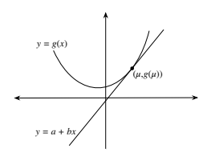
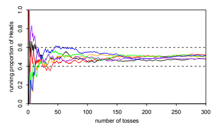
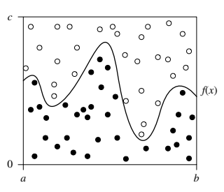
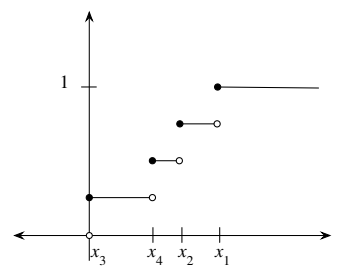
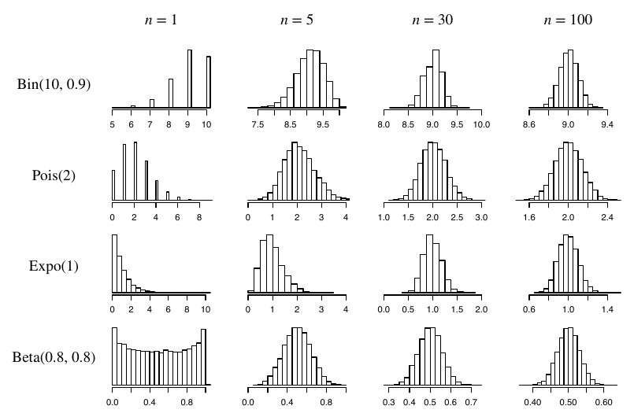
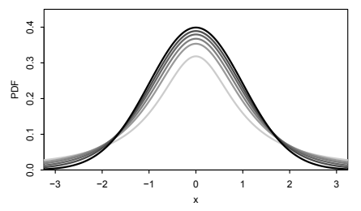
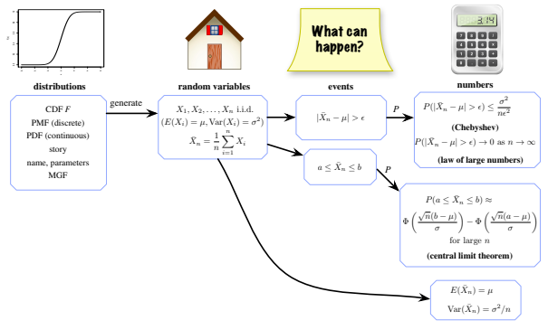
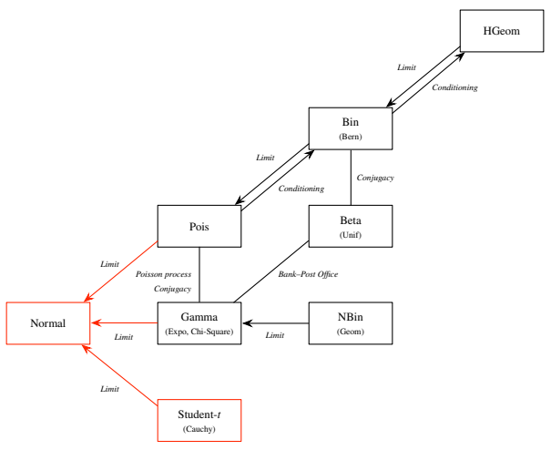
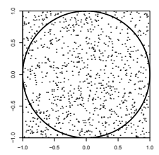

10 부등식과 극한정리
“확률이나 기댓값을 정확히 계산할 수 없다면 어떻게 해야 할까?” 확률을 사용하는 사람이라면 거의 누구나 때때로 이런 상황에 부딪힌다. 당황하지 말자. 시뮬레이션, 경계 구하기, 근사라는 강력한 전략을 사용할 수 있다.
몬테카를로 시뮬레이션: 이 책에서 우리는 이미 여러 시뮬레이션을 보았다. R 절에는 몇 줄의 코드와 컴퓨터를 이용한 몇 초의 계산만으로 좋은 근삿값을 얻는 예가 많다. “몬테카를로”는 단지 시뮬레이션에 난수를 사용한다는 뜻이다. 이 용어는 모나코의 몬테카를로 카지노에서 유래했다.
몬테카를로 시뮬레이션은 매우 강력한 기법이며, 현재로서는 이것이 유일하게 합리적인 접근법인 문제가 많다. 그렇다면 왜 언제나 시뮬레이션만 하지 않을까? 몇 가지 이유가 있다.
- 빠른 컴퓨터를 사용하더라도 시뮬레이션을 대단히 오래 실행해야 할 수 있다. 12장에서 소개하는 마르코프 연쇄 몬테카를로라는 중요한 확장 기법을 사용하면 몬테카를로 시뮬레이션을 적용할 수 있는 문제의 범위가 크게 넓어진다. 그러나 그 경우에도 쓸 만한 답을 얻으려면 얼마나 오래 실행해야 할지 알 수 없고, 그 시간이 매우 길 수 있다.
- 문제의 모든 모수 값에 대해 좋은 답을 얻고 싶을 수 있다. 예를 들어 쿠폰 수집가 문제(예제 4.3.12)에서 장난감 종류가 \(n\)개이면 완전한 세트를 모으는 데 평균적으로 약 \(n\log n\)개의 장난감이 필요하다는 것을 보았다. 이는 간단하고 기억하기 쉬운 답이다. 특정한 \(n\)에 대해서는 시뮬레이션하기 쉽다. 예를 들어 \(n=20\)일 때 쿠폰 수집 과정을 시뮬레이션하면 약 60이라는 답을 얻을 수 있다. 하지만 이 결과만으로는 일반적인 \(n\log n\)이라는 결과를 쉽게 알아내기 어렵다.
- 시뮬레이션 결과에는 의문을 제기하기 쉽다. 충분히 오래 실행했는지, 결과가 참값에 가까운지 어떻게 알 수 있을까? “가깝다”는 것은 얼마나 가깝다는 뜻일까? 증명으로 보장되는 결과가 필요할 수도 있다.
부등식을 이용한 경계: 확률의 경계는 그 확률이 일정한 범위 안에 있음을 증명으로 보장한다. 이 장의 앞부분에서는 확률론의 중요한 부등식 몇 가지를 소개한다. 이런 부등식을 이용하면 정확한 답이 가질 수 있는 값의 범위를 좁히는, 즉 상한이나 하한을 구하는 경우가 많다. 경계가 좋은 근삿값을 제공하지는 않을 수도 있다. 예를 들어 구하려는 확률이 \([0.2,0.6]\)에 있다는 경계를 얻었다면 정확한 답은 이 범위 어디에나 있을 수 있다. 그래도 적어도 정확한 답이 이 범위 안에 있음은 보장된다.
극한정리를 이용한 근사: 이 장의 뒷부분에서는 확률론에서 가장 유명한 두 정리인 큰 수의 법칙과 중심극한정리를 다룬다. 두 정리 모두 데이터가 점점 많아질 때 표본평균에 어떤 일이 일어나는지 알려준다. 극한정리를 사용하면 데이터가 많을 때 잘 들어맞을 가능성이 높은 근사를 할 수 있다. 마지막으로 극한정리를 이용해 통계학에서 중요한 이름 붙은 분포 몇 가지를 살펴본다.
10.1 부등식
10.1.1 코시-슈바르츠: 결합 기댓값에 대한 주변 경계
코시-슈바르츠 부등식은 수학 전체에서 가장 유명한 부등식 중 하나이다. 확률론에서는 다음과 같은 형태를 취한다.
정리 10.1.1 (코시-슈바르츠). 분산이 유한한 임의의 확률변수 \(X\), \(Y\)에 대해
\[|E(XY)|\leq\sqrt{E(X^2)E(Y^2)}.\]
증명. 임의의 \(t\)에 대해
\[0\leq E(Y-tX)^2=E(Y^2)-2tE(XY)+t^2E(X^2).\]
\(t\)는 어디서 나왔을까? \(t\)를 도입하면 그 값마다 하나씩 무한히 많은 부등식이 생긴다. 그러고 나서 미적분을 이용하여 가장 좋은 부등식을 주는 \(t\)를 찾는다. 오른쪽을 \(t\)로 미분하여 0으로 놓으면 \(t=E(XY)/E(X^2)\)일 때 오른쪽이 최소가 되므로 가장 촘촘한 경계를 얻는다. 이 값을 대입하면 코시-슈바르츠 부등식이 나온다. \(\blacksquare\)1
\(X\)와 \(Y\)가 비상관이면 \(E(XY)=E(X)E(Y)\)이므로 이 값은 주변 기댓값 \(E(X)\)와 \(E(Y)\)에만 의존한다. 그러나 일반적으로 \(E(XY)\)를 정확히 계산하려면 \(X\)와 \(Y\)의 결합분포를 알고 이를 다룰 수 있어야 한다. 코시-슈바르츠 부등식은 주변 이차적률 \(E(X^2)\)과 \(E(Y^2)\)로 \(E(XY)\)의 경계를 구하게 해 준다.
\(X\)와 \(Y\)의 평균이 0이라면 코시-슈바르츠 부등식에는 아주 익숙한 통계적 해석이 있다. 바로 두 변수의 상관관계가 \(-1\)과 1 사이에 있다는 뜻이다.
예제 10.1.2. \(E(X)=E(Y)=0\)이라고 하자. 그러면
\[E(XY)=\operatorname{Cov}(X,Y),\quad E(X^2)=\operatorname{Var}(X),\quad E(Y^2)=\operatorname{Var}(Y),\]
따라서 코시-슈바르츠 부등식은 \(|\operatorname{Corr}(X,Y)|\leq 1\)이 된다. 물론 정리 7.3.5에서 이미 알고 있던 사실이다. 이제 평균이 0이라는 가정을 없애 보자. 중심화한 확률변수 \(X-E(X)\)와 \(Y-E(Y)\)에 코시-슈바르츠를 적용하면 다시 \(|\operatorname{Corr}(X,Y)|\leq 1\)을 얻는다. \(\square\)2
코시-슈바르츠 부등식은 흔히 창의적으로 적용할 수 있다. 예를 들어 \(X=X\cdot1\)로 쓰면 \(|E(X\cdot1)|\leq\sqrt{E(X^2)E(1^2)}\)이고, 이는 \(E(X^2)\geq(EX)^2\)로 정리된다. 이로써 분산이 음이 아니라는 사실을 새롭게 간단히 증명했다. 또 다른 예로, 음이 아닌 확률변수가 0이 될 확률의 상한을 구해 보자.
예제 10.1.3 (이차적률 방법). \(X\)를 음이 아닌 확률변수라 하고 \(P(X=0)\)의 상한을 구하고자 한다고 하자. 예를 들어 \(X\)가 Fred가 시험에서 틀린 문제의 수라면 \(P(X=0)\)은 Fred가 만점을 받을 확률이다. 또는 \(X\)가 파티에서 생일이 같은 사람 쌍의 수라면 \(P(X=0)\)은 생일이 같은 쌍이 없을 확률이다. 다음에 주목하자.
\[X=XI(X>0),\]
여기서 \(I(X>0)\)은 \(X>0\)의 지시확률변수이다. \(X=0\)이면 양변이 0이고 \(X>0\)이면 양변이 \(X\)이므로 이 등식이 성립한다. 코시-슈바르츠 부등식에 의해
\[E(X)=E(XI(X>0))\leq\sqrt{E(X^2)E(I(X>0))}.\]
이를 정리하고 기본 연결고리를 이용하면
\[P(X>0)\geq\frac{(EX)^2}{E(X^2)},\]
또는 동등하게
\[P(X=0)\leq\frac{\operatorname{Var}(X)}{E(X^2)}.\]
이 경계를 적용하는 방법을 이차적률 방법이라고 부르기도 한다. 예를 들어 \(I_j\)들이 서로 비상관인 지시확률변수이고
\[X=I_1+\cdots+I_n\]
인 경우에 이 경계를 적용해 보자. \(p_j=E(I_j)\)라고 하면
\[\operatorname{Var}(X)=\sum_{j=1}^n\operatorname{Var}(I_j)=\sum_{j=1}^n(p_j-p_j^2)=\sum_{j=1}^np_j-\sum_{j=1}^np_j^2=\mu-c,\]
여기서 \(\mu=E(X)\)이고 \(c=\sum_{j=1}^n p_j^2\)이다. 또한 \(E(X^2)=\operatorname{Var}(X)+(EX)^2=\mu^2+\mu-c\)이므로
\[P(X=0)\leq\frac{\operatorname{Var}(X)}{E(X^2)}=\frac{\mu-c}{\mu^2+\mu-c}\leq\frac1{\mu+1}.\]
마지막 부등식은 양변을 교차하여 곱하면 쉽게 확인할 수 있다.3 일반적으로 “\(X\)의 평균이 크면 \(X\)가 0일 가능성은 작다”라고 말하는 것은 잘못이다. \(X\)가 대개 0이지만 아주 작은 확률로 극히 큰 값을 가질 수도 있기 때문이다. 그러나 지금의 상황에서는 평균이 크면 \(X\)가 0일 가능성이 작다는 것을 간단하고 정량적으로 표현할 수 있다.
예를 들어 방에 14명이 있다고 하자. 생일이 같거나 하루 차이 나는 두 사람이 있을 가능성은 얼마나 될까? 이는 생일 문제보다 정확히 풀기가 훨씬 어려워서 예제 4.7.6에서는 포아송 근사를 이용했다. 그러나 포아송 근사가 충분히 좋은지 걱정하는 대신 경계를 통해 보장된 결과를 원할 수도 있다. \(X\)를 “가까운 생일”을 가진 사람 쌍의 수라고 하자. 지시확률변수를 이용하면 \(E(X)=\binom{14}{2}\frac3{365}\)이므로
\[P(X=0)\leq\frac1{E(X)+1}<0.573.\]
\(P(X=0)\)의 실제 값은 소수 둘째 자리까지 0.46이며, 이는 경계와 일치한다. \(\square\)
코시-슈바르츠 부등식을 이용하면 주변 적률생성함수가 존재한다는 사실에서 결합 적률생성함수의 존재도 추론할 수 있다. 결합분포의 양을 주변분포의 양으로 제한할 수 있어서 얻는 또 하나의 이점이다.
예제 10.1.4 (결합 적률생성함수의 존재). \(X_1\)과 \(X_2\)가 결합분포를 가진 확률변수이며 독립이거나 동일한 분포를 가질 필요는 없다고 하자. 각각의 주변 적률생성함수가 존재하면 확률벡터 \((X_1,X_2)\)의 결합 적률생성함수도 존재함을 보여라.
풀이. 7장에서 결합 적률생성함수는 \(M(s,t)=E(e^{sX_1+tX_2})\)로 정의되며 원점 주위의 직사각형 영역에서 이 기댓값이 유한하면 존재한다고 했음을 떠올리자. 주변 적률생성함수는 \(E(e^{sX_1})\)과 \(E(e^{tX_2})\)이며 각각 원점 주위의 어떤 구간에서 유한해야 한다. \(X_1\)과 \(X_2\)의 적률생성함수가 \((−a,a)\)에서 유한하다고 하자. \(s,t\in(-a/2,a/2)\)를 고정하면 코시-슈바르츠 부등식에 의해
\[E(e^{sX_1+tX_2})\leq\sqrt{E(e^{2sX_1})E(e^{2tX_2})}.\]
가정에 의해 오른쪽은 유한하므로 \(E(e^{sX_1+tX_2})\)는 직사각형 \(\{(s,t):s,t\in(-a/2,a/2)\}\)에서 유한하다. 따라서 \((X_1,X_2)\)의 결합 적률생성함수가 존재한다. \(\square\)
10.1.2 옌센: 볼록성에 관한 부등식
4.3.13에서 비선형 함수 \(g\)에 대해 \(E(g(X))\)와 \(g(E(X))\)가 매우 다를 수 있음을 이야기했다. \(g\)가 볼록함수 또는 오목함수라면 옌센 부등식은 두 값 중 어느 쪽이 더 큰지 정확히 알려준다. 볼록함수와 오목함수에 관한 내용은 수학 부록을 참조하자. 흔히 이계도함수를 이용해 볼록성이나 오목성을 판별할 수 있다. \(g''\)이 존재한다고 할 때, \(g\)가 볼록이라는 것은 정의역의 모든 곳에서 \(g''(x)\geq0\)이라는 것과 동치이며, \(g\)가 오목이라는 것은 모든 곳에서 \(g''(x)\leq0\)이라는 것과 동치이다.
정리 10.1.5 (옌센). \(X\)를 확률변수라고 하자. \(g\)가 볼록함수이면 \(E(g(X))\geq g(E(X))\)이고, \(g\)가 오목함수이면 \(E(g(X))\leq g(E(X))\)이다. 두 경우 모두 등호가 성립하려면 확률 1로 \(g(X)=a+bX\)가 되는 상수 \(a\), \(b\)가 있어야 한다.4
증명. \(g\)가 볼록이면 \(g\)에 접하는 모든 직선은 \(g\) 아래에 놓인다(그림 10.1 참조). 특히 \(\mu=E(X)\)라 하고 점 \((\mu,g(\mu))\)에서의 접선을 생각하자. \(g\)가 \(\mu\)에서 미분 가능하면 접선은 유일하다. 그렇지 않으면 접선 중 하나를 선택한다. 이 접선을 \(a+bx\)라고 하면 볼록성에 의해 모든 \(x\)에 대해 \(g(x)\geq a+bx\)이므로 \(g(X)\geq a+bX\)이다. 양변의 기댓값을 취하면
\[E(g(X))\geq E(a+bX)=a+bE(X)=a+b\mu=g(\mu)=g(E(X)),\]
즉 원하는 결과를 얻는다. \(g\)가 오목하면 \(h=-g\)가 볼록이므로 방금 증명한 것을 \(h\)에 적용하면 \(g\)에 대한 부등호의 방향이 볼록인 경우와 반대임을 알 수 있다.
마지막으로 볼록인 경우에 등호가 성립한다고 하자. \(Y=g(X)-a-bX\)로 놓으면 \(Y\)는 음이 아닌 확률변수이고 \(E(Y)=0\)이므로 \(P(Y=0)=1\)이다. \(Y>0\)일 가능성이 아무리 작더라도 0이 아니면 \(E(Y)>0\)이 되기 때문이다. 따라서 \(P(g(X)=a+bX)=1\)일 때 그리고 그때에만 등호가 성립한다. 오목인 경우에는 \(Y=a+bX-g(X)\)로 놓고 같은 논증을 적용하면 된다. \(\blacksquare\)

이미 알고 있는 간단한 사례 몇 가지로 옌센 부등식을 확인해 보자.
- \(g(x)=x^2\)은 볼록이므로(이계도함수가 2이다) 옌센 부등식은 \(E(X^2)\geq(EX)^2\)이라고 한다. 이는 분산이 음이 아니라는 사실 또는 코시-슈바르츠 부등식으로 이미 알고 있다.
- 4장의 상트페테르부르크 역설에서 \(N\sim\operatorname{FS}(1/2)\)일 때 \(E(2^N)>2^{EN}\)임을 보았다. \(g(x)=2^x\)이 볼록이므로 옌센 부등식과 일치한다(\(g''(x)\)를 구하려면 \(2^x=e^{x\log 2}\)로 쓰면 된다). 더욱이 \(N\)의 분포가 무엇이든 부등호의 방향은 같다는 것도 알려준다! \(N\)이 확률 1로 상수인 경우를 제외하면 부등호는 엄격하다.
옌센 부등식의 방향을 잊어버리더라도 이런 간단한 경우를 이용하면 쉽게 다시 알아낼 수 있다. 간단한 예를 몇 가지 더 들면 다음과 같다.
- \(E|X|\geq|EX|\),
- 양의 확률변수 \(X\)에 대해 \(E(1/X)\geq1/(EX)\),
- 양의 확률변수 \(X\)에 대해 \(E(\log X)\leq\log(EX)\).
또 다른 예로, 데이터의 표본표준편차를 이용해 미지의 표준편차를 추정할 때 편향의 방향이 어떻게 되는지 옌센 부등식으로 알 수 있다.
예제 10.1.6 (표본표준편차의 편향). \(X_1,\ldots,X_n\)이 분산 \(\sigma^2\)인 독립이고 동일한 분포를 따르는 확률변수라고 하자. 정리 6.3.4에서 표본분산 \(S_n^2\)은 \(\sigma^2\)의 불편추정량이라는 것을 떠올리자. 즉 \(E(S_n^2)=\sigma^2\)이다. 그러나 우리는 흔히 표준편차 \(\sigma\)에 더 관심이 있다. \(\sigma\)의 자연스러운 추정량은 표본표준편차 \(S_n\)이다.
옌센 부등식에 따르면 \(S_n\)은 \(\sigma\)에 대해 편향된 추정량이며, 부등호의 방향도 알 수 있다.
\[E(S_n)=E(\sqrt{S_n^2})\leq\sqrt{E(S_n^2)}=\sigma.\]
따라서 표본표준편차는 참 표준편차를 과소추정하는 경향이 있다. 편향의 크기는 분포에 따라 달라지므로 이를 바로잡는 보편적인 방법은 없다. 이는 표본분산의 분모를 \(n-1\)로 정의하면 모든 분포에 대해 불편이 되는 것과 대조된다. 다행히 표본 크기가 충분히 크면 일반적으로 편향은 작다. \(\square\)5
옌센 부등식이 중요한 분야 중 하나는 정보를 정량화하는 방법을 연구하는 정보이론이다. 정보이론의 원리는 통신과 압축에 필수적이 되었다(MP3와 휴대전화가 그 예다). 옌센 부등식의 응용 사례를 몇 가지 살펴보자.
예제 10.1.7 (엔트로피). 확률이 \(p\)인 사건이 일어났다는 사실을 알게 되었을 때의 놀람은 \(\log_2(1/p)\)로 정의하며, 비트라는 단위로 측정한다. 확률이 작은 사건은 놀람이 크고, 확률이 1인 사건의 놀람은 0이다. 로그를 쓰는 이유는 독립인 두 사건 \(A\)와 \(B\)를 관찰했을 때 놀람의 합이 \(A\cap B\)를 관찰했을 때의 놀람과 같도록 하기 위해서이다. 밑을 2로 택한 이유는 확률이 \(1/2\)인 사건이 일어났음을 알게 되었을 때 놀람이 1이 되게 하기 위해서이며, 이는 1비트의 정보를 얻는 것에 해당한다.
\(X\)를 가능한 값이 서로 다른 \(a_1,a_2,\ldots,a_n\)이고 그 확률이 각각 \(p_1,p_2,\ldots,p_n\)인 이산확률변수라고 하자. 따라서 \(p_1+\cdots+p_n=1\)이다. \(X\)의 엔트로피는 \(X\)의 값을 알게 될 때 얻는 놀람의 평균으로 정의한다.
\[H(X)=\sum_{j=1}^n p_j\log_2(1/p_j).\]
\(X\)의 엔트로피는 확률 \(p_j\)에만 의존하고 값 \(a_j\)에는 의존하지 않는다. 예를 들어 \(X^3\)은 서로 다른 값 \(a_1^3,\ldots,a_n^3\)을 각각 확률 \(p_1,\ldots,p_n\)으로 가지므로 \(H(X^3)=H(X)\)이다. 이 확률 목록은 \(X\)의 경우와 같다.
옌센 부등식을 이용하여 \(X\)의 엔트로피가 최대가 되는 경우는 \(a_1,\ldots,a_n\)에 대한 분포가 균등분포일 때, 즉 모든 \(j\)에 대해 \(p_j=1/n\)일 때임을 보여라. 이는 직관에도 맞는다. \(X\)의 각 값이 나올 가능성이 같을 때 \(X\)의 값을 알면 평균적으로 가장 많은 정보를 얻게 되고, \(X\)가 상수이면 가능한 정보가 가장 적기 때문이다.
풀이. \(X\sim\operatorname{DUnif}(a_1,\ldots,a_n)\)이라고 하면
\[H(X)=\sum_{j=1}^n\frac1n\log_2(n)=\log_2(n).\]
이제 같은 가능한 값 \(a_1,\ldots,a_n\)에 각각 확률 \(p_1,\ldots,p_n\)을 부여하는 임의의 확률변수 \(Z\)를 생각하자. 확률이 양수인 값의 개수를 \(m\le n\)이라 하고, \(Z=a_j\)일 때 \(Y=1/p_j\)로 정의하자. 그러면 \(E(\log_2Y)=H(Z)\)이고 \(E(Y)=m\)이다. 따라서 옌센 부등식에 의해6
\[H(Z)=E(\log_2Y)\leq\log_2(E(Y))=\log_2(m)\leq\log_2(n)=H(X).\]
그러므로 \(a_1,\ldots,a_n\)에서 균등한 \(X\)의 엔트로피는 같은 가능한 값들을 가진 어떤 다른 확률변수 \(Z\)의 엔트로피보다 작지 않다. \(\square\)
예제 10.1.8 (쿨백-라이블러 발산). \(\mathbf p=(p_1,\ldots,p_n)\)와 \(\mathbf r=(r_1,\ldots,r_n)\)을 확률벡터라고 하자. 즉 각 성분은 음이 아니고 각각의 합은 1이다. 이를 지지집합이 서로 다른 \(n\)개의 값으로 이루어진 확률변수에 대해 가능한 두 확률질량함수로 생각하자. \(\mathbf p\)와 \(\mathbf r\) 사이의 쿨백-라이블러 발산은 다음과 같이 정의한다.
\[D(\mathbf p,\mathbf r)=\sum_{j=1}^n p_j\log_2(1/r_j)-\sum_{j=1}^n p_j\log_2(1/p_j).\]
이는 실제 확률이 \(\mathbf p\)인데 \(\mathbf r\)을 사용하여 계산할 때(예를 들어 \(\mathbf p\)는 모르고 \(\mathbf r\)이 현재 추측인 경우) 경험할 평균 놀람과 \(\mathbf p\)를 사용할 때의 평균 놀람의 차이다. 쿨백-라이블러 발산이 음이 아님을 보여라.
풀이. 로그의 성질을 이용하면
\[D(\mathbf p,\mathbf r)=-\sum_{j=1}^n p_j\log_2\left(\frac{r_j}{p_j}\right).\]
\(Y\)를 \(r_j/p_j\)를 확률 \(p_j\)로 취하는 확률변수라고 하자. LOTUS에 의해 \(D(\mathbf p,\mathbf r)=-E(\log_2Y)\)이다. 옌센 부등식에 의해
\[D(\mathbf p,\mathbf r)=-E(\log_2Y)\geq-\log_2(E(Y))=-\log_2(1)=0,\]
등호는 \(\mathbf p=\mathbf r\)일 때 그리고 그때에만 성립한다. 이 결과는 잘못된 확률을 사용하면 올바른 확률을 사용할 때보다 평균적으로 더 놀라게 된다는 뜻이다. \(\square\)7
예제 10.1.9 (로그 확률 점수). 객관식 시험에서 답 하나에 동그라미를 치는 대신 각 선택지가 정답일 확률을 기입하라는 요청을 받았다고 상상해 보자. 한 문제의 점수는 정답에 부여한 확률의 로그이다. 한 문제의 최고 점수는 0이고 최저 점수는 \(-\infty\)이며, 정답에 확률 0을 부여하면 최저 점수를 받는다.8
\(n\)개 선택지 각각이 정답일 것이라는 자신의 확률이 \(p_1,\ldots,p_n\)이고, \(p_j\)는 양수이며 합은 1이라고 하자. 자신의 진정한 확률 \(p_j\)를 보고할 때 문제의 기대 점수가 최대가 됨을 보여라. 다시 말해 로그 확률 점수 체계에서는 자신의 믿음에 대해 거짓말하거나 실제보다 자신이 더 또는 덜 있다고 가장할 유인이 없다. 단, 기대 점수를 최대화하는 것이 목표라고 가정한다.
풀이. 이 예제는 바로 이전 예제와 동형이다! 진정한 확률 \(\mathbf p\)를 보고하면 문제의 기대 점수는 \(\sum_{j=1}^n p_j\log p_j\)이고, 거짓 확률 \(\mathbf r\)을 보고하면 \(\sum_{j=1}^n p_j\log r_j\)이다. 두 값의 차이는 정확히 \(\mathbf p\)와 \(\mathbf r\)의 쿨백-라이블러 발산이다. 앞 예제에서 증명했듯이 이는 항상 음이 아니다.9 따라서 진정한 확률을 보고할 때 기대 점수가 최대가 된다. \(\square\)
10.1.3 마르코프, 체비쇼프, 체르노프: 꼬리확률의 경계
이 절의 부등식은 확률변수가 분포의 오른쪽 또는 왼쪽 꼬리에서 “극단적인” 값을 가질 확률에 대한 경계를 제공한다.
정리 10.1.10 (마르코프). 임의의 확률변수 \(X\)와 상수 \(a>0\)에 대해
\[P(|X|\geq a)\leq\frac{E|X|}{a}.\]
증명. \(Y=|X|/a\)로 놓자. \(P(Y\geq1)\leq E(Y)\)임을 보이면 된다. 다음에 주목하자.
\[I(Y\geq1)\leq Y.\]
\(I(Y\geq1)=0\)이면 부등식은 \(Y\geq0\)이 되고, \(I(Y\geq1)=1\)이면 지시확률변수의 정의에 의해 \(Y\geq1\)이기 때문이다. 양변의 기댓값을 취하면 마르코프 부등식을 얻는다. \(\blacksquare\)
직관적으로 해석하기 위해 \(X\)를 모집단에서 무작위로 선택한 개인의 소득이라고 하자. \(a=2E(X)\)로 놓으면 마르코프 부등식은 \(P(X\geq2E(X))\leq1/2\)라고 한다. 즉 모집단의 절반을 넘는 사람이 평균 소득의 두 배 이상을 버는 일은 불가능하다. 이는 명백하다. 절반이 넘는 사람이 평균의 두 배 이상을 번다면 평균 소득이 그보다 높아질 것이기 때문이다! 마찬가지로 \(P(X\geq3E(X))\leq1/3\)이다. 모집단의 3분의 1을 넘는 사람이 평균의 세 배 이상을 벌 수는 없다. 그 사람들만으로도 평균이 현재 값보다 높아지기 때문이다.10
마르코프 부등식은 \(X\)에 아무 가정도 요구하지 않기 때문에 매우 거친 경계이다. 부등식의 오른쪽이 1보다 크거나 무한대일 수도 있다. 이미 0과 1 사이임을 아는 수의 경계를 구하는 데는 별 도움이 되지 않는다. 놀랍게도 마르코프 부등식에서 거의 추가 작업 없이 유도할 수 있는 다음 두 부등식은 마르코프보다 훨씬 좋은 경계를 주는 경우가 많다.
정리 10.1.11 (체비쇼프). \(X\)의 평균을 \(\mu\), 분산을 \(\sigma^2\)이라고 하자. 그러면 임의의 \(a>0\)에 대해
\[P(|X-\mu|\geq a)\leq\frac{\sigma^2}{a^2}.\]
증명. 마르코프 부등식에 의해
\[P(|X-\mu|\geq a)=P((X-\mu)^2\geq a^2)\leq\frac{E(X-\mu)^2}{a^2}=\frac{\sigma^2}{a^2}.\qquad\blacksquare\]
\(c>0\)에 대해 \(a\)에 \(c\sigma\)를 대입하면 동등한 형태의 체비쇼프 부등식을 얻는다.
\[P(|X-\mu|\geq c\sigma)\leq\frac1{c^2}.\]
이는 확률변수가 평균에서 표준편차의 \(c\)배 이상 떨어질 확률의 상한을 준다. 예를 들어 평균에서 표준편차의 2배 이상 떨어질 확률은 25%를 넘을 수 없다.11
마르코프 부등식으로 체비쇼프 부등식을 증명할 때의 아이디어는 \(|X-\mu|\)를 제곱한 다음 마르코프 부등식을 적용하는 것이었다. 마찬가지로 마르코프 부등식을 적용하기 전에 다른 변환을 하는 것도 흔히 유용하다. 공학에서 널리 쓰이는 체르노프 경계는 지수함수에 이 아이디어를 적용한다.
정리 10.1.12 (체르노프). 임의의 확률변수 \(X\)와 상수 \(a>0\), \(t>0\)에 대해
\[P(X\geq a)\leq\frac{E(e^{tX})}{e^{ta}}.\]
증명. \(g(x)=e^{tx}\)인 변환 \(g\)는 역함수가 존재하고 엄격히 증가한다. 따라서 마르코프 부등식에 의해
\[P(X\geq a)=P(e^{tX}\geq e^{ta})\leq\frac{E(e^{tX})}{e^{ta}}.\qquad\blacksquare\]
처음에는 체르노프 경계가 마르코프 부등식보다 어떤 이점이 있는지 분명하지 않을 수 있지만, 매우 좋은 특징이 두 가지 있다.
- 코시-슈바르츠 부등식의 증명에서처럼 오른쪽을 \(t\)에 관해 최적화하여 가장 촘촘한 상한을 얻을 수 있다.
- \(X\)의 적률생성함수가 존재하면 경계의 분자는 적률생성함수이므로 그 유용한 성질들을 활용할 수 있다.
이제 실제 확률을 아는 간단한 예에 방금 논의한 세 경계를 적용해 비교해 보자.
예제 10.1.13 (정규분포 꼬리확률의 경계). \(Z\sim N(0,1)\)이라고 하자. 68-95-99.7% 법칙에 의해 \(P(|Z|>3)\)은 약 0.003이며, 정확한 값은 \(2\Phi(-3)\)이다. 마르코프, 체비쇼프, 체르노프 부등식으로 어떤 상한을 얻는지 보자.
- 마르코프: 5장에서 \(E|Z|=\sqrt{2/\pi}\)임을 보았다. 따라서 \[P(|Z|>3)\leq\frac{E|Z|}{3}=\frac13\sqrt{\frac2\pi}\approx0.27.\]
- 체비쇼프: \[P(|Z|>3)\leq\frac19\approx0.11.\]
- 체르노프 (정규분포의 대칭성을 이용한 후): \[P(|Z|>3)=2P(Z>3)\leq2e^{-3t}E(e^{tZ})=2e^{-3t}e^{t^2/2},\] 여기서 표준정규분포의 적률생성함수를 이용했다. 오른쪽은 미분하여 0으로 놓으면 \(t=3\)에서 최소가 된다. 먼저 로그를 취해도 좋다. 로그를 취해도 최솟값의 위치는 바뀌지 않으며 이차다항식만 최소화하면 되기 때문이다. \(t=3\)을 대입하면 \[P(|Z|>3)\leq2e^{-9/2}\approx0.022.\]
이 상한들은 모두 맞지만 체르노프 경계가 단연 가장 좋다. 이 예제는 이 장의 도입부에서 설명한 경계와 근사의 차이도 보여준다. 마르코프 부등식은 꼬리확률 \(P(|Z|>3)\)이 기껏해야 0.27이라고 알려주지만, \(P(|Z|>3)\)이 약 0.27이라고 말한다면 대략 100배나 틀리는 실수를 저지르는 것이다. \(\square\)
10.2 큰 수의 법칙
이제 독립이고 동일한 분포를 따르는 확률변수들의 표본 크기가 커질 때 표본평균이 어떻게 행동하는지 설명하는 두 정리, 큰 수의 법칙과 중심극한정리를 살펴보자. 이 절과 다음 절에서는 유한한 평균 \(\mu\)와 유한한 분산 \(\sigma^2\)을 갖는 독립이고 동일한 분포를 따르는 확률변수 \(X_1,X_2,X_3,\ldots\)이 주어졌다고 가정한다. 모든 양의 정수 \(n\)에 대해
\[ \bar X_n=\frac{X_1+\cdots+X_n}{n} \]
을 \(X_1\)부터 \(X_n\)까지의 표본평균이라 하자. 표본평균 자체도 확률변수이며, 그 평균은 \(\mu\), 분산은 \(\sigma^2/n\)이다.
\[ \begin{aligned} E(\bar X_n)&=\frac1nE(X_1+\cdots+X_n)=\frac1n\bigl(E(X_1)+\cdots+E(X_n)\bigr)=\mu,\\ \operatorname{Var}(\bar X_n)&=\frac1{n^2}\operatorname{Var}(X_1+\cdots+X_n) =\frac1{n^2}\bigl(\operatorname{Var}(X_1)+\cdots+\operatorname{Var}(X_n)\bigr)=\frac{\sigma^2}{n}. \end{aligned} \]
큰 수의 법칙(LLN)은 \(n\)이 커짐에 따라 표본평균 \(\bar X_n\)이 참평균 \(\mu\)에 수렴한다고 말한다. 수렴의 의미는 아래에서 설명한다. 큰 수의 법칙에는 ‘강한’ 형태(SLLN)와 ‘약한’ 형태(WLLN)가 있는데, 확률변수의 열이 어떤 수에 수렴한다는 것을 약간 다르게 정의한다. 두 형태를 모두 제시하고, 두 번째는 체비쇼프 부등식을 이용해 증명하겠다.
정리 10.2.1 (강한 큰 수의 법칙). 표본평균 \(\bar X_n\)은 확률 1로 참평균 \(\mu\)에 점별 수렴한다. 확률변수가 표본공간 \(S\)에서 \(\mathbb R\)로 가는 함수임을 떠올리면, 이러한 수렴은 각 점 \(s\in S\)에 대해 \(\bar X_n(s)\to\mu\)임을 뜻한다. 단, 예외들의 집합 \(B_0\)에서 수렴하지 않아도 되는데, 이 집합은 \(P(B_0)=0\)이어야 한다. 간단히 쓰면 \(P(\bar X_n\to\mu)=1\)이다.
정리 10.2.2 (약한 큰 수의 법칙). 모든 \(\epsilon>0\)에 대해, \(n\to\infty\)일 때 \(P(|\bar X_n-\mu|>\epsilon)\to0\)이다. (이러한 수렴을 확률수렴이라 한다.)
증명. \(\epsilon>0\)을 고정하자. 체비쇼프 부등식에 의해
\[ P(|\bar X_n-\mu|>\epsilon)\leq\frac{\sigma^2}{n\epsilon^2}. \]
\(n\to\infty\)일 때 오른쪽이 0으로 가므로 왼쪽도 0으로 가야 한다. \(\blacksquare\)
큰 수의 법칙은 시뮬레이션, 통계학, 과학에 필수적이다. 컴퓨터 시뮬레이션이나 실제 세계에서 실험을 여러 번 독립적으로 반복하여 ‘데이터’를 생성한다고 생각해 보자. 반복에서 얻은 어떤 양의 평균값으로 그 이론적 평균을 근사할 때마다 우리는 암묵적으로 큰 수의 법칙에 의존하고 있다.
예제 10.2.3 (앞면의 누적 비율). \(X_1,X_2,\ldots\)이 독립이고 동일한 \(\operatorname{Bern}(1/2)\) 분포를 따르자. 공정한 동전을 연속해서 던질 때 \(X_j\)를 앞면이 나왔는지 나타내는 지시확률변수로 해석하면, \(\bar X_n\)은 \(n\)번 던진 후 앞면의 비율이다. 강한 큰 수의 법칙에 따르면 확률 1로, 확률변수의 열 \(\bar X_1,\bar X_2,\bar X_3,\ldots\)이 구체적인 숫자의 열로 실현되었을 때 그 숫자의 열은 \(1/2\)로 수렴한다. 수학적으로 \(HHHHHH\ldots\)나 \(HHTHHTHHTHHT\ldots\)와 같은 기이한 결과도 있지만, 이러한 결과가 일어날 확률은 전체를 합쳐도 0이다. 약한 큰 수의 법칙은 임의의 \(\epsilon>0\)에 대해 \(\bar X_n\)이 \(1/2\)에서 \(\epsilon\)보다 멀리 떨어질 확률을 \(n\)을 충분히 크게 하여 원하는 만큼 작게 만들 수 있다고 말한다.
이를 보여 주기 위해 공정한 동전 던지기의 열 여섯 개를 시뮬레이션하고, 각 열에 대해 \(\bar X_n\)을 \(n\)의 함수로 계산했다. 물론 실제로 동전을 무한히 많이 던지는 시뮬레이션은 할 수 없으므로 300번 던진 후 멈추었다. 그림 10.2는 각 열에서 \(\bar X_n\)을 \(n\)의 함수로 나타낸다.

처음에는 앞면의 누적 비율이 상당히 크게 변동함을 볼 수 있다. 그러나 동전을 던지는 횟수가 증가하면 \(\operatorname{Var}(\bar X_n)\)은 점점 작아지고 \(\bar X_n\)은 \(1/2\)에 가까워진다. \(\square\)
주의 10.2.4 (큰 수의 법칙은 동전의 무기억성과 모순되지 않는다). 위 예제에서 큰 수의 법칙은 앞면의 비율이 \(1/2\)로 수렴한다고 말하지만, 이것이 앞면이 길게 연속해서 나온 다음 균형을 맞추기 위해 뒷면이 ‘나올 차례’라는 뜻은 아니다. 오히려 수렴은 압도 효과로 일어난다. 과거의 던지기들이 앞으로 있을 무한히 많은 던지기에 의해 압도되는 것이다.
독립이고 동일한 분포를 따르는 베르누이 확률변수의 열은 큰 수의 법칙을 보여 주는 가장 단순한 예지만, 다음 예제에서 볼 수 있듯이 이 단순한 경우는 통계학에서 매우 유용한 방법의 토대가 된다.
예제 10.2.5 (몬테카를로 적분). 적분 \(\int_a^b f(x)\,dx\)를 근사하고자 하는 복잡한 함수 \(f\)가 있다고 하자. 적분이 유한함을 알 수 있도록 \(0\leq f(x)\leq c\)라고 가정한다. \(\int_a^b f(x)\,dx\)는 단지 하나의 수이므로 겉보기에는 이 문제에 확률이 개입하지 않는다. 그러나 무작위성이 없는 곳에도 우리는 무작위성을 만들어 낼 수 있다! 몬테카를로 적분은 정확하게 적분하는 방법을 사용할 수 없을 때 무작위 표본을 이용하여 정적분의 근삿값을 구하는 기법이다.
\(A\)를 \((x,y)\) 평면에서 \(a\leq x\leq b\)이고 \(0\leq y\leq c\)인 직사각형이라 하자. \(B\)를 \(a\leq x\leq b\)에서 곡선 \(y=f(x)\) 아래이면서 \(x\)축 위인 영역이라 하면, 구하려는 적분은 영역 \(B\)의 넓이이다. 우리의 전략은 \(A\)에서 무작위로 표본을 추출한 다음 그 표본 중 영역 \(B\)에도 속하는 것의 비율을 계산하는 것이다. 그림 10.3은 이를 보여 준다. \(B\)에 속하는 점은 검은색이고, \(B\)에 속하지 않는 점은 흰색이다.

이 방법이 작동하는 이유를 알아보기 위해 직사각형 \(A\)에서 독립이고 동일한 균등분포를 따르는 점 \((X_1,Y_1),(X_2,Y_2),\ldots,(X_n,Y_n)\)을 뽑는다고 하자. \((X_j,Y_j)\)가 \(B\)에 속하면 \(I_j=1\), 그렇지 않으면 \(I_j=0\)으로 하여 지시확률변수 \(I_1,\ldots,I_n\)을 정의한다. 그러면 \(I_j\)는 성공확률이 정확히 \(B\)의 넓이와 \(A\)의 넓이의 비율인 베르누이 확률변수이다. \(p=E(I_j)\)라 하면
\[ p=E(I_j)=P(I_j=1)=\frac{\int_a^b f(x)\,dx}{c(b-a)}. \]
\(p\)를 \(\frac1n\sum_{j=1}^n I_j\)로 추정하고, 이를 이용하여 원하는 적분을 다음과 같이 추정할 수 있다.
\[ \int_a^b f(x)\,dx\approx c(b-a)\frac1n\sum_{j=1}^n I_j. \]
\(I_j\)는 평균이 \(p\)인 독립이고 동일한 분포를 따르는 확률변수이므로, 큰 수의 법칙에 따라 점의 개수가 무한대로 갈 때 이 추정값은 확률 1로 적분의 참값에 수렴한다. \(\square\)
예제 10.2.6 (경험적 누적분포함수의 수렴). \(X_1,\ldots,X_n\)이 누적분포함수 \(F\)를 갖는 독립이고 동일한 분포의 확률변수라 하자. 모든 수 \(x\)에 대해 \(R_n(x)\)를 \(X_1,\ldots,X_n\) 중 \(x\) 이하인 것의 개수라 하자. 즉,
\[ R_n(x)=\sum_{j=1}^n I(X_j\leq x). \]
지시확률변수 \(I(X_j\leq x)\)는 성공확률이 \(F(x)\)인 독립이고 동일한 분포를 따르므로, \(R_n(x)\)는 매개변수가 \(n\)과 \(F(x)\)인 이항분포를 따른다.
\(X_1,\ldots,X_n\)의 경험적 누적분포함수는 \(x\)의 함수로서 다음과 같이 정의된다.
\[ \hat F_n(x)=\frac{R_n(x)}{n}. \]
\(X_1,\ldots,X_n\)을 관측하기 전에는 각 \(x\)에 대해 \(\hat F_n(x)\)가 확률변수이다. 관측한 후에는 각 \(x\)에서 \(\hat F_n(x)\)가 구체적인 값으로 실현되므로, \(\hat F_n\)은 하나의 구체적인 누적분포함수로 실현된다. 참 누적분포함수 \(F\)를 모를 때 이를 이용하여 \(F\)를 추정할 수 있다.
예를 들어 \(n=4\)이고 \(X_1=x_1\), \(X_2=x_2\), \(X_3=x_3\), \(X_4=x_4\)를 관측했다고 하자. 그러면 \(R_4(x)/4\)의 그래프는 0에서 시작하여 \(x_j\) 중 하나에 도달할 때마다 \(1/4\)씩 뛰어오른다. 다시 말해 \(R_4(x)/4\)는 각각 확률 \(1/4\)로 \(x_1,\ldots,x_4\)의 값을 취하는 이산확률변수의 누적분포함수이다. 그림 10.4가 이를 보여 준다.
이제 \(n\to\infty\)일 때 \(\hat F_n\)에 어떤 일이 일어나는지 물을 수 있다. \(\hat F_n\)을 참값 \(F\)의 추정값으로 사용한다면 이는 자연스러운 질문이다. 극한에서 근사는 잘 작동할까? 큰 수의 법칙이 답을 준다. 각 고정된 \(x\)에 대해 \(R_n(x)\)는 \(p=F(x)\)인 독립이고 동일한 \(\operatorname{Bern}(p)\) 확률변수 \(n\)개의 합이다. 따라서 강한 큰 수의 법칙에 의해 각 고정된 \(x\)에 대해 \(n\to\infty\)일 때 \(\hat F_n(x)\to F(x)\)가 확률 1로 성립한다.

경험적 누적분포함수는 비모수 통계학에서 흔히 사용된다. 비모수 통계학은 무작위 표본이 나온 분포의 계열에 대해 강한 가정을 하지 않고 그 표본을 이해하려는 통계학의 한 분야이다. 예를 들어 \(X_1,\ldots,X_n\sim\mathcal N(\mu,\sigma^2)\)이라고 가정하는 대신, 비모수적 방법에서는 임의의 누적분포함수 \(F\)에 대해 \(X_1,\ldots,X_n\sim F\)를 허용한 다음 경험적 누적분포함수를 \(F\)의 근사로 사용한다. 표본을 점점 더 많이 수집할 때 극한에서 이 근사가 타당함을 보장해 주는 것이 바로 큰 수의 법칙이다. 모든 \(x\)값에서 경험적 누적분포함수는 참 누적분포함수에 수렴한다. \(\square\)
10.3 중심극한정리
앞 절에서와 같이 \(X_1,X_2,X_3,\ldots\)이 평균 \(\mu\), 분산 \(0<\sigma^2<\infty\)인 독립이고 동일한 분포를 따르는 확률변수라고 하자. 큰 수의 법칙에 따르면 \(n\to\infty\)일 때 \(\bar X_n\)은 상수 \(\mu\)로 수렴한다(확률 1로). 그렇다면 상수가 되어 가는 동안에는 어떤 분포를 따를까? 중심극한정리(CLT)는 이 질문에 답한다. 그 이름에서 알 수 있듯이 이 정리는 통계학에서 중심적인 중요성을 지닌 극한정리이다.
중심극한정리는 \(n\)이 클 때 표준화한 \(\bar X_n\)의 분포가 표준정규분포에 가까워진다고 말한다. 표준화란 \(\bar X_n\)에서 그 평균 \(\mu\)를 빼고 표준편차 \(\sigma/\sqrt n\)으로 나누는 것을 뜻한다.
정리 10.3.1 (중심극한정리). \(n\to\infty\)일 때,
\[\sqrt n\left(\frac{\bar X_n-\mu}{\sigma}\right)\xrightarrow{d}N(0,1).\]
말로 표현하면, 왼쪽의 누적분포함수(CDF)가 표준정규분포의 CDF인 \(\Phi\)로 수렴한다는 뜻이다.
증명. \(X_j\)의 적률생성함수(MGF)가 0의 열린 근방에서 유한하게 존재한다고 가정하고 중심극한정리를 증명하겠다. 다만 이 정리는 훨씬 더 일반적으로 성립한다. \(M(t)=E(e^{tX_j})\)라고 놓고, 일반성을 잃지 않고 \(\mu=0\), \(\sigma^2=1\)이라고 하자. 정리에서 결국 \(\bar X_n\)을 표준화할 것이므로 처음부터 \(X_j\)를 표준화해도 된다. 그러면 \(M(0)=1\), \(M'(0)=\mu=0\), \(M''(0)=\sigma^2=1\)이다.
\(\sqrt n\bar X_n=(X_1+\cdots+X_n)/\sqrt n\)의 MGF가 \(N(0,1)\) 분포의 MGF인 \(e^{t^2/2}\)로 수렴함을 보이고자 한다. 다음 정리에 의해 이는 타당한 전략이다. 확률변수 \(Z_1,Z_2,\ldots\)의 MGF가 연속확률변수 \(Z\)의 MGF로 수렴하면 \(Z_n\)의 CDF는 \(Z\)의 CDF로 수렴한다. 이 결과의 증명에는 어려운 해석학이 필요하므로 생략한다. 하지만 확률변수의 MGF가 그 분포를 결정한다는 사실을 생각하면 적어도 그럴듯하게 느껴질 것이다.
MGF의 성질에 의해
\[ \begin{aligned} E\left(e^{t(X_1+\cdots+X_n)/\sqrt n}\right) &=E(e^{tX_1/\sqrt n})E(e^{tX_2/\sqrt n})\cdots E(e^{tX_n/\sqrt n})\\ &=\left(M\left(\frac{t}{\sqrt n}\right)\right)^n. \end{aligned} \]
\(n\to\infty\)로 보내면 부정형 \(1^\infty\)를 얻는다. 따라서 대신 로그인 \(n\log M(t/\sqrt n)\)의 극한을 구하고 마지막에 지수함수를 취한다. 그러면
\[ \begin{aligned} \lim_{n\to\infty}n\log M\left(\frac t{\sqrt n}\right) &=\lim_{y\to0}\frac{\log M(yt)}{y^2} &&\text{여기서 }y=1/\sqrt n\\ &=\lim_{y\to0}\frac{tM'(yt)}{2yM(yt)} &&\text{로피탈의 법칙에 의해}\\ &=\frac t2\lim_{y\to0}\frac{M'(yt)}y &&M(yt)\to1\text{이므로}\\ &=\frac{t^2}{2}\lim_{y\to0}M''(yt) &&\text{로피탈의 법칙에 의해}\\ &=\frac{t^2}{2}. \end{aligned} \]
따라서 \(\sqrt n\bar X_n\)의 MGF인 \(\left(M(t/\sqrt n)\right)^n\)은 \(N(0,1)\)의 MGF인 \(e^{t^2/2}\)에 가까워진다. \(\blacksquare\)
중심극한정리는 \(n\to\infty\)일 때 \(\bar X_n\)의 극한분포에 관한 점근적 결과이지만, \(n\)이 크고 유한할 때의 \(\bar X_n\)의 분포를 근사하는 방법도 제시한다.
근사 10.3.2 (중심극한정리의 근사 형태). \(n\)이 클 때 \(\bar X_n\)의 분포는 근사적으로 \(N(\mu,\sigma^2/n)\)이다.
증명. 중심극한정리의 화살표를 근사 분포 기호 \(\dot\sim\)으로 바꾸면
\[\sqrt n\left(\frac{\bar X_n-\mu}{\sigma}\right)\mathrel{\dot\sim}N(0,1).\]
위치-척도 변환에 의해
\[\bar X_n\mathrel{\dot\sim}N(\mu,\sigma^2/n).\qquad\blacksquare\]
물론 기댓값과 분산의 성질로부터 \(\bar X_n\)의 평균이 \(\mu\)이고 분산이 \(\sigma^2/n\)임은 이미 알고 있었다. 중심극한정리는 \(\bar X_n\)이 이 평균과 분산을 갖는 정규분포에 근사적으로 따른다는 추가 정보를 제공한다.
이 결과가 얼마나 일반적인지 잠시 살펴보자. 평균과 분산이 유한하기만 하면 개별 \(X_j\)의 분포는 무엇이든 될 수 있다. 이항분포 같은 이산분포, 베타분포 같은 유계 분포, 로그정규분포 같은 치우친 분포, 또는 봉우리와 골이 여러 개인 분포일 수도 있다. 어떤 경우든 평균을 취하면 정규성이 나타난다. 그림 10.5에는 네 가지 출발 분포와 \(n=1,5,30,100\)에 대한 \(\bar X_n\)의 분포를 히스토그램으로 나타냈다. \(n\)이 커짐에 따라 \(X_j\)의 분포와 관계없이 \(\bar X_n\)의 분포가 정규분포의 모습에 가까워지기 시작한다.

그렇다고 \(X_j\)의 분포가 중요하지 않다는 뜻은 아니다. \(X_j\)의 분포가 심하게 치우쳐 있거나 봉우리가 여러 개라면 정규근사가 정확해지기 전에 \(n\)이 매우 커져야 할 수도 있다. 반대 극단으로, \(X_j\)가 이미 독립이고 동일한 정규분포를 따르면 \(\bar X_n\)의 분포는 모든 \(n\)에 대해 정확히 \(N(\mu,\sigma^2/n)\)이다. 현실에는 무한한 데이터셋이 없으므로 유한한 \(n\)에 대한 정규근사의 품질은 중요한 고려 사항이다.
예제 10.3.3 (앞면의 누적 비율 다시 살펴보기). 예제 10.2.3과 같이 \(X_1,X_2,\ldots\)을 독립이고 동일한 \(\operatorname{Bern}(1/2)\) 분포를 따르는 확률변수라고 하자. 앞에서는 큰 수의 법칙을 이용해 \(n\to\infty\)일 때 \(\bar X_n\to1/2\)라는 결론을 얻었다. 이제 중심극한정리를 이용하면 더 많은 것을 말할 수 있다. \(E(\bar X_n)=1/2\)이고 \(\operatorname{Var}(\bar X_n)=1/(4n)\)이므로 \(n\)이 클 때
\[\bar X_n\mathrel{\dot\sim}N\left(\frac12,\frac1{4n}\right).\]
이 추가 정보를 이용하면 주어진 \(n\)에서 평균으로부터 어느 정도 벗어나는 것이 전형적인지 정량화할 수 있다. 예를 들어 \(n=100\)이면 \(\operatorname{SD}(\bar X_n)=1/20=0.05\)이므로, 정규근사가 타당하다면 68-95-99.7% 법칙에 의해 \(\bar X_n\)이 구간 \([0.40,0.60]\)에 있을 확률은 약 95%이다. \(\square\)
중심극한정리는 표본평균 \(\bar X_n\)이 근사적으로 정규분포를 따른다고 말한다. 그런데 합 \(W_n=X_1+\cdots+X_n=n\bar X_n\)은 \(\bar X_n\)의 척도만 바꾼 것이므로, 중심극한정리는 \(W_n\)도 근사적으로 정규분포를 따른다는 뜻이다. \(X_j\)의 평균이 \(\mu\), 분산이 \(\sigma^2\)이면 \(W_n\)의 평균은 \(n\mu\), 분산은 \(n\sigma^2\)이다. 따라서 중심극한정리에 의해 \(n\)이 클 때
\[W_n\mathrel{\dot\sim}N(n\mu,n\sigma^2).\]
이는 \(\bar X_n\)에 대한 근사와 완전히 동등하지만, 앞에서 배운 이름 붙은 분포 중 상당수를 독립이고 동일한 분포를 따르는 확률변수의 합으로 볼 수 있기 때문에 이 형태로 쓰면 유용할 수 있다. 다음은 세 가지 간단한 예이다.
예제 10.3.4 (포아송분포의 정규분포로의 수렴). \(Y\sim\operatorname{Pois}(n)\)이라고 하자. 정리 4.8.1에 의해 \(Y\)를 독립이고 동일한 \(\operatorname{Pois}(1)\) 분포를 따르는 확률변수 \(n\)개의 합으로 볼 수 있다. 따라서 \(n\)이 클 때
\[Y\mathrel{\dot\sim}N(n,n).\qquad\square\]
예제 10.3.5 (감마분포의 정규분포로의 수렴). \(Y\sim\operatorname{Gamma}(n,\lambda)\)라고 하자. 정리 8.4.3에 의해 \(Y\)를 독립이고 동일한 \(\operatorname{Expo}(\lambda)\) 분포를 따르는 확률변수 \(n\)개의 합으로 볼 수 있다. 따라서 \(n\)이 클 때
\[Y\mathrel{\dot\sim}N\left(\frac n\lambda,\frac n{\lambda^2}\right).\qquad\square\]
예제 10.3.6 (이항분포의 정규분포로의 수렴). \(Y\sim\operatorname{Bin}(n,p)\)이고 \(0<p<1\)이라고 하자. 정리 3.8.8에 의해 \(Y\)를 독립이고 동일한 \(\operatorname{Bern}(p)\) 분포를 따르는 확률변수 \(n\)개의 합으로 볼 수 있다. 따라서 \(n\)이 클 때
\[Y\mathrel{\dot\sim}N\bigl(np,np(1-p)\bigr).\]
이는 통계학에서 아마 가장 널리 쓰이는 정규근사일 것이다. \(Y\)가 이산형이라는 사실을 반영하기 위해 확률 \(P(Y=k)\)를 정규근사에서 정확히 0이 되는 대신 \(P(k-1/2<Y<k+1/2)\)로 써서 너비가 0이 아닌 구간으로 만든 다음 후자에 정규근사를 적용한다. 이를 연속성 보정이라고 하며, \(Y\)의 확률질량함수(PMF)에 대해 다음 근사를 얻는다.
\[ P(Y=k)=P(k-1/2<Y<k+1/2)\approx \Phi\left(\frac{k+1/2-np}{\sqrt{np(1-p)}}\right)- \Phi\left(\frac{k-1/2-np}{\sqrt{np(1-p)}}\right). \]
이항분포의 정규근사는 4장에서 논의한 포아송근사와 상호 보완적이다. 포아송근사는 \(p\)가 작을 때 가장 잘 작동하는 반면, 정규근사는 \(n\)이 크고 \(p\)가 \(1/2\) 부근에 있어 \(Y\)의 분포가 대칭이거나 거의 대칭일 때 가장 잘 작동한다. \(\square\)
큰 수의 법칙과 중심극한정리를 둘 다 사용하는 예제로 마무리하자.
예제 10.3.7 (변동성이 큰 주식). 변동성이 매우 큰 한 주식의 가격이 매일 같은 확률로 70% 오르거나 50% 내리며, 각 날의 변동은 서로 독립이다. 초기 가격은 \(Y_0=100\)이고 \(n\)일 후 주가를 \(Y_n\)이라고 하자.
\(n\)이 클 때 \(\log Y_n\)이 근사적으로 정규분포를 따르는 이유를 설명하고 그 모수를 구하라.
\(n\to\infty\)일 때 \(E(Y_n)\)은 어떻게 되는가?
큰 수의 법칙을 이용하여 \(n\to\infty\)일 때 \(Y_n\)이 어떻게 되는지 구하라.
풀이. (a) 처음 \(n\)일 동안 주가가 오른 횟수를 \(U_n\sim\operatorname{Bin}(n,1/2)\)라고 하면 \(Y_n=Y_0(0.5)^{n-U_n}(1.7)^{U_n}\)으로 쓸 수 있다. 따라서
\[\log Y_n=\log Y_0-n\log2+U_n\log3.4,\]
이는 \(U_n\)의 위치-척도 변환이다. 중심극한정리에 의해 \(n\)이 클 때 \(U_n\)은 근사적으로 \(N(n/2,n/4)\)를 따르므로 \(\log Y_n\)은 평균
\[E(\log Y_n)=\log100-n\log2+(\log3.4)E(U_n)\approx\log100-0.081n\]
과 분산
\[\operatorname{Var}(\log Y_n)=(\log3.4)^2\operatorname{Var}(U_n)\approx0.374n\]
을 갖는 정규분포를 근사적으로 따른다.
- \(E(Y_1)=(170+50)/2=110\)이다. 마찬가지로
\[E(Y_{n+1}\mid Y_n)=\frac12(1.7Y_n)+\frac12(0.5Y_n)=1.1Y_n,\]
이므로
\[E(Y_{n+1})=E(E(Y_{n+1}\mid Y_n))=1.1E(Y_n).\]
따라서 \(E(Y_n)=1.1^nE(Y_0)=100\cdot1.1^n\)이고, 이는 \(n\to\infty\)일 때 \(\infty\)로 간다.
- (a)에서와 같이 처음 \(n\)일 동안 주가가 오른 횟수를 \(U_n\sim\operatorname{Bin}(n,1/2)\)라고 하자. \(E(Y_n)\to\infty\)이지만, 주가가 어느 날 70% 오르고 다음 날 50% 내리면 \(1.7\cdot0.5=0.85\)이므로 전체적으로는 15% 하락한다는 점에 주목하자. 따라서 여러 날이 지난 후 주가가 오른 날과 내린 날이 각각 전체의 대략 절반이면 \(Y_n\)은 매우 작을 것이다. 큰 수의 법칙은 실제로 그렇게 된다는 것을 보장한다! 큰 수의 법칙을 적용하기 위해 \(Y_n\)을 \(U_n/n\)으로 나타내면
\[Y_n=Y_0(0.5)^{n-U_n}(1.7)^{U_n}=Y_0\left(\frac{(3.4)^{U_n/n}}2\right)^n.\]
\(U_n/n\to0.5\)가 확률 1로 성립하므로 \((3.4)^{U_n/n}\to\sqrt{3.4}<2\)가 확률 1로 성립한다. 따라서 \(Y_n\to0\)이 확률 1로 성립한다.
역설적으로 \(E(Y_n)\to\infty\)이지만 \(Y_n\to0\)은 확률 1로 성립한다. 이 결과에 대한 직관을 얻기 위해 도박꾼이 100달러로 시작하여 매일 같은 확률로 돈을 네 배로 불리거나 재산 전부를 잃는 극단적인 예를 생각해 보자. 그러면 도박꾼의 재산은 평균적으로 매일 두 배가 된다. 이는 언젠가 도박꾼이 파산하는 날이 온다는 사실을 알아차리기 전까지는 좋아 보인다. 도박꾼의 실제 재산은 확률 1로 0에 수렴하는 반면, 기댓값은 상트페테르부르크의 역설에서처럼 극히 큰 액수를 얻을 아주 작은 확률 때문에 무한대로 간다. \(\square\)
주의 10.3.8 (고약한 코시 분포). 중심극한정리는 \(X_j\)의 평균과 분산이 유한할 것을 요구하며, 약한 큰 수의 법칙(WLLN)에 대한 우리의 증명도 같은 조건에 의존했다. 예제 7.1.25에서 소개한 코시 분포에는 평균과 분산이 없으므로 코시 분포는 큰 수의 법칙과 중심극한정리 어느 쪽도 따르지 않는다. 독립이고 동일한 코시 분포를 따르는 확률변수 \(n\)개의 표본평균은 \(n\)이 아무리 커져도 여전히 같은 코시 분포를 따른다는 것을 보일 수 있다. 따라서 표본평균은 중심극한정리에서 본 거동과 달리 결코 정규분포에 가까워지지 않는다. 또한 \(\bar X_n\)이 수렴할 참평균이 없으므로 큰 수의 법칙도 적용되지 않는다.
10.4 카이제곱분포와 스튜던트 t분포
이 책에서 다룰 마지막 두 연속분포를 소개하며 이 장을 마무리하자. 두 분포 모두 정규분포와 밀접한 관련이 있다.
정의 10.4.1 (카이제곱분포). \(Z_1,Z_2,\ldots,Z_n\)이 독립이고 동일한 \(N(0,1)\) 분포를 따를 때 \(V=Z_1^2+\cdots+Z_n^2\)이라고 하자. 그러면 \(V\)는 자유도가 \(n\)인 카이제곱분포를 따른다고 하며, \(V\sim\chi_n^2\)으로 쓴다.
알고 보면 \(\chi_n^2\) 분포는 감마분포의 특수한 경우이다.
정리 10.4.2. \(\chi_n^2\) 분포는 \(\operatorname{Gamma}(n/2,1/2)\) 분포이다.
증명. 먼저 \(Z_1^2\sim\chi_1^2\)의 확률밀도함수가 \(\operatorname{Gamma}(1/2,1/2)\)의 확률밀도함수와 같음을 확인하자. \(x>0\)일 때
\[F(x)=P(Z_1^2\leq x)=P(-\sqrt{x}\leq Z_1\leq\sqrt{x})=\Phi(\sqrt{x})-\Phi(-\sqrt{x})=2\Phi(\sqrt{x})-1,\]
이므로
\[f(x)=\frac{d}{dx}F(x)=2\phi(\sqrt{x})\frac12x^{-1/2}=\frac{1}{\sqrt{2\pi x}}e^{-x/2}.\]
이는 실제로 \(\operatorname{Gamma}(1/2,1/2)\)의 확률밀도함수이다. 이제 \(V=Z_1^2+\cdots+Z_n^2\sim\chi_n^2\)은 독립인 \(\operatorname{Gamma}(1/2,1/2)\) 확률변수 \(n\)개의 합이므로 \(V\sim\operatorname{Gamma}(n/2,1/2)\)이다. \(\blacksquare\)
감마분포의 평균과 분산에 관한 지식으로부터 \(E(V)=n\), \(\operatorname{Var}(V)=2n\)이다. \(V\)가 독립이고 동일한 정규 확률변수의 제곱의 합이라는 사실과 6장에서 구한 정규분포의 적률을 이용해서도 평균과 분산을 구할 수 있다.
\[ \begin{aligned} E(V)&=nE(Z_1^2)=n,\\ \operatorname{Var}(V)&=n\operatorname{Var}(Z_1^2) =n\left(E(Z_1^4)-(EZ_1^2)^2\right)=n(3-1)=2n. \end{aligned} \]
카이제곱분포의 적률생성함수(MGF)를 구하려면 보다 일반적인 \(\operatorname{Gamma}(a,\lambda)\)의 MGF에 \(n/2\)와 \(1/2\)를 대입하면 된다. 정리 8.4.3의 계산을 \(a>0\)으로 일반화하면 그 MGF는 \(t<\lambda\)일 때 \((\lambda/(\lambda-t))^a\)이다. 따라서
\[M_V(t)=\left(\frac{1}{1-2t}\right)^{n/2},\qquad t<1/2.\]
카이제곱분포는 표본분산의 분포와 관련이 있으므로 통계학에서 중요하다. 표본분산은 분포의 실제 분산을 추정하는 데 사용할 수 있다. 확률변수들이 독립이고 동일한 정규분포를 따르면 표본분산을 적절히 척도 변환한 결과는 카이제곱분포를 따른다.
예제 10.4.3 (표본분산의 분포). \(n\geq 2\), \(\sigma^2>0\)이고 \(X_1,\ldots,X_n\)이 독립이고 동일한 \(N(\mu,\sigma^2)\) 분포를 따를 때 표본분산은 확률변수
\[S_n^2=\frac{1}{n-1}\sum_{j=1}^n(X_j-\bar X_n)^2\]
이다. 다음을 보여라.
\[\frac{(n-1)S_n^2}{\sigma^2}\sim\chi_{n-1}^2.\]
풀이. 먼저 표준정규 확률변수 \(Z_1,\ldots,Z_n\)에 대해 \(\sum_{j=1}^n(Z_j-\bar Z_n)^2\sim\chi_{n-1}^2\)임을 보이자. 이는 증명하려는 더 일반적인 결과와 부합하며 유용한 디딤돌이 된다. 먼저 정리 6.3.4의 증명에 나온 항등식의 특수한 경우인 다음 유용한 항등식에서 시작하자.
\[\sum_{j=1}^n Z_j^2=\sum_{j=1}^n(Z_j-\bar Z_n)^2+n\bar Z_n^2.\]
이제 양변의 MGF를 취하자. 예제 7.5.9에 따라 \(\sum_{j=1}^n(Z_j-\bar Z_n)^2\)과 \(n\bar Z_n^2\)은 독립이므로 두 변수의 합의 MGF는 각각의 MGF의 곱이다. 또한
\[\sum_{j=1}^n Z_j^2\sim\chi_n^2,\qquad n\bar Z_n^2\sim\chi_1^2\]
이므로
\[\left(\frac{1}{1-2t}\right)^{n/2}=\left(\sum_{j=1}^n(Z_j-\bar Z_n)^2\text{의 MGF}\right)\cdot\left(\frac{1}{1-2t}\right)^{1/2}.\]
따라서
\[\left(\sum_{j=1}^n(Z_j-\bar Z_n)^2\text{의 MGF}\right)=\left(\frac{1}{1-2t}\right)^{(n-1)/2}.\]
이는 \(\chi_{n-1}^2\)의 MGF이다. MGF가 분포를 결정하므로
\[\sum_{j=1}^n(Z_j-\bar Z_n)^2\sim\chi_{n-1}^2.\]
일반적인 \(X_1,\ldots,X_n\)에 대해서는 위치-척도 변환을 이용하여 \(X_j=\mu+\sigma Z_j\), \(\bar X_n=\mu+\sigma\bar Z_n\)으로 쓴다. \(\sum_{j=1}^n(X_j-\bar X_n)^2\)을 \(Z_j\)로 나타내면 \(\mu\)는 소거되고 \(\sigma\)는 제곱되어 밖으로 나온다.
\[\sum_{j=1}^n(X_j-\bar X_n)^2=\sum_{j=1}^n\bigl(\mu+\sigma Z_j-(\mu+\sigma\bar Z_n)\bigr)^2=\sigma^2\sum_{j=1}^n(Z_j-\bar Z_n)^2.\]
종합하면
\[\frac{(n-1)S_n^2}{\sigma^2}=\frac{1}{\sigma^2}\sum_{j=1}^n(X_j-\bar X_n)^2=\frac{1}{\sigma^2}\cdot\sigma^2\sum_{j=1}^n(Z_j-\bar Z_n)^2\sim\chi_{n-1}^2,\]
이는 원하던 결과이다. 이 결과는 \(E(S_n^2)=\sigma^2\)도 뜻하며, 이는 표본분산이 실제 분산을 추정하는 불편추정량이라는 정리 6.3.4의 결과와 일치한다. \(\blacksquare\)
스튜던트 t분포는 표준정규 확률변수와 \(\chi_n^2\) 확률변수로 나타내어 정의한다.
정의 10.4.4 (스튜던트 t분포).
\[T=\frac{Z}{\sqrt{V/n}}\]
이라고 하자. 여기서 \(Z\sim N(0,1)\), \(V\sim\chi_n^2\)이며 \(Z\)와 \(V\)는 독립이다. 그러면 \(T\)는 자유도가 \(n\)인 스튜던트 t분포를 따른다고 하며 \(T\sim t_n\)으로 쓴다. 흔히 ‘스튜던트 t분포’를 줄여 ‘t분포’라고 한다.
스튜던트 t분포는 기네스의 양조 책임자였던 윌리엄 고셋이 맥주의 품질관리를 연구하던 중 1908년에 도입했다. 회사는 그에게 필명으로 연구를 발표하도록 요구했고, 그는 스튜던트(Student)라는 이름을 선택했다. t분포는 실제로 매우 널리 쓰이는 t검정이라는 가설검정 절차의 기초가 된다(여기서는 t검정의 자세한 내용을 소개하지 않는다. 통계적 추론 강의에서 다루는 편이 더 좋기 때문이다).
자유도가 \(n\)인 스튜던트 t분포의 확률밀도함수는 표준정규분포의 확률밀도함수와 비슷하지만 꼬리가 더 두껍다. \(n\)이 작으면 훨씬 더 두껍고, \(n\)이 크면 크게 두껍지는 않다. 확률밀도함수의 공식은
\[f_T(t)=\frac{\Gamma((n+1)/2)}{\sqrt{n\pi}\,\Gamma(n/2)}(1+t^2/n)^{-(n+1)/2}\]
이다. 유도가 복잡하므로 이를 증명하지는 않겠다. 어차피 스튜던트 t분포의 가장 중요한 성질 상당수는 확률밀도함수로 지루한 계산을 하기보다 정규 확률변수와 \(\chi_n^2\) 확률변수를 이용한 정의를 생각하면 더 쉽게 이해할 수 있다. 다음은 그러한 성질들이다.
정리 10.4.5 (스튜던트 t분포의 성질). 스튜던트 t분포 \(t_n\)은 다음 성질을 갖는다.
- 대칭성: \(T\sim t_n\)이면 \(-T\sim t_n\)이다.
- 특수한 경우인 코시분포: \(t_1\) 분포는 예제 7.1.25에서 소개한 코시분포와 같다.
- 정규분포로의 수렴: \(n\to\infty\)일 때 \(t_n\) 분포는 표준정규분포에 가까워진다.
증명. 각 성질을 증명할 때 정의 10.4.4를 이용한다.
\(Z\sim N(0,1)\), \(V\sim\chi_n^2\)이고 \(Z\)와 \(V\)가 독립일 때
\[T=\frac{Z}{\sqrt{V/n}}\]
으로 나타내자. 그러면
\[-T=\frac{-Z}{\sqrt{V/n}}\]
이고 \(-Z\sim N(0,1)\)이므로 \(-T\sim t_n\)이다.
코시분포는 독립이고 동일한 \(N(0,1)\) 분포를 따르는 \(X,Y\)에 대해 \(X/Y\)의 분포로 정의했음을 떠올리자. 정의에 따라 \(T\sim t_1\)은 \(T=Z/\sqrt V\)로 나타낼 수 있다. 여기서 \(Z_1\)은 \(Z\)와 독립이고 \(\sqrt V=\sqrt{Z_1^2}=|Z_1|\)이다. 그런데 대칭성에 의해 \(Z/|Z_1|\)은 \(Z/Z_1\)과 같은 분포를 가지며, \(Z/Z_1\)은 코시분포를 따른다. 따라서 \(t_1\) 분포와 코시분포는 같다.
이는 강한 큰 수의 법칙(SLLN)에서 따른다. 독립이고 동일한 표준정규 확률변수의 수열 \(Z_1,Z_2,\ldots\)을 생각하고
\[V_n=Z_1^2+\cdots+Z_n^2\]
으로 놓자. 강한 큰 수의 법칙에 따라 \(V_n/n\to E(Z_1^2)=1\)이 확률 1로 성립한다. 이제 모든 \(Z_j\)와 독립인 \(Z\sim N(0,1)\)을 택하고 모든 \(n\)에 대해
\[T_n=\frac{Z}{\sqrt{V_n/n}}\]
으로 놓자. 정의에 따라 \(T_n\sim t_n\)이고, 분모가 1로 수렴하므로 \(T_n\to Z\sim N(0,1)\)이다. 따라서 \(T_n\)의 분포는 \(Z\)의 분포에 가까워진다. \(\blacksquare\)
그림 10.6은 여러 \(n\) 값에 대한 스튜던트 t분포의 확률밀도함수를 그려 위 정리의 세 성질을 모두 보여준다. 확률밀도함수는 모두 0을 중심으로 대칭이고, \(n=1\)일 때의 확률밀도함수는 코시분포의 확률밀도함수처럼 보이며, \(n\to\infty\)일 때 두꺼운 꼬리는 점점 얇아지고 확률밀도함수는 표준정규분포의 확률밀도함수에 가까워진다.

10.5 요약
부등식과 극한정리는 정확하게 계산하고 싶지 않은 기댓값과 확률을 다루는 서로 다른 두 가지 방법이다. 부등식을 이용하면 알려지지 않은 값의 하한이나 상한, 또는 둘 다를 얻을 수 있다. 코시-슈바르츠 부등식과 옌센 부등식은 기댓값의 경계를 주고, 마르코프 부등식, 체비쇼프 부등식, 체르노프 경계는 꼬리확률의 경계를 준다.
두 극한정리인 큰 수의 법칙과 중심극한정리는 평균이 \(\mu\)이고 분산이 \(\sigma^2\)인 독립이고 동일한 분포를 따르는 확률변수 \(X_1,X_2,\ldots\)의 표본평균 \(\bar X_n\)의 거동을 설명한다. 강한 큰 수의 법칙(SLLN)은 \(n\to\infty\)일 때 표본평균 \(\bar X_n\)이 확률 1로 참평균 \(\mu\)에 수렴한다고 말한다. 중심극한정리(CLT)는 \(\bar X_n\)을 표준화한 분포가 표준정규분포로 수렴한다고 말한다.
옮긴이 주: 아래 중심극한정리의 표준화에는 \(0<\sigma^2<\infty\)가 필요하다.
\[\sqrt n\left(\frac{\bar X_n-\mu}{\sigma}\right)\xrightarrow{d}N(0,1).\]
이를 \(\bar X_n\)의 분포에 대한 근사로 바꾸어 쓰면 다음과 같다.
\[\bar X_n\mathrel{\dot\sim}N\left(\mu,\frac{\sigma^2}{n}\right).\]
동등하게, 합 \(S_n=X_1+\cdots+X_n=n\bar X_n\)을 표준화한 분포가 표준정규분포로 수렴한다고 말할 수도 있다.
\[\frac{S_n-n\mu}{\sigma\sqrt n}\xrightarrow{d}N(0,1).\]
그림 10.7은 분포에서 그 분포를 따르는 독립이고 동일한 분포의 확률변수들로, 그리고 그 확률변수들로부터 표본평균을 만들어 그 자체를 확률변수로 연구하는 과정을 보여 준다. 체비쇼프 부등식, 큰 수의 법칙, 중심극한정리는 모두 표본평균의 거동에 관한 중요한 정보를 제공한다.
카이제곱분포와 스튜던트 t분포는 통계학에서 중요한 두 가지 이름 있는 분포이다. 카이제곱분포는 감마분포의 특수한 경우이다. 스튜던트 t분포는 종 모양의 확률밀도함수를 가지며 정규분포보다 꼬리가 두껍고, 자유도가 증가함에 따라 표준정규분포로 수렴한다.

그림에서 왼쪽부터 분포, 확률변수, 사건, 수를 나타낸다. 분포는 누적분포함수(CDF) \(F\), 확률질량함수(PMF, 이산형), 확률밀도함수(PDF, 연속형), 이야기, 이름과 모수, 적률생성함수(MGF)로 표현할 수 있으며 확률변수를 생성한다. \(E(X_i)=\mu\), \(\operatorname{Var}(X_i)=\sigma^2\)인 독립이고 동일한 분포의 확률변수에 대해 \(\bar X_n=\frac1n\sum_{i=1}^nX_i\)이다. 그림의 사건과 수의 관계는 다음과 같다.
\[ \begin{aligned} P(|\bar X_n-\mu|>\epsilon)&\leq\frac{\sigma^2}{n\epsilon^2} &&\text{(체비쇼프 부등식)},\\ P(|\bar X_n-\mu|>\epsilon)&\to0\quad(n\to\infty) &&\text{(큰 수의 법칙)},\\ P(a\leq\bar X_n\leq b)&\approx\Phi\left(\frac{\sqrt n(b-\mu)}{\sigma}\right)-\Phi\left(\frac{\sqrt n(a-\mu)}{\sigma}\right) &&\text{($n$이 클 때, 중심극한정리)},\\ E(\bar X_n)&=\mu,\qquad \operatorname{Var}(\bar X_n)=\frac{\sigma^2}{n}. \end{aligned} \]
마지막으로 이름 있는 분포들 사이의 관계를 나타내는 그림을 다시 살펴보자. 이번에는 카이제곱분포를 감마분포의 특수한 경우로, 스튜던트 t분포를 코시분포를 특수한 경우로 갖는 분포로 추가했다. 또한 포아송분포, 감마분포, 스튜던트 t분포가 정규분포로 수렴함을 나타내는 화살표를 추가했다. 앞의 두 수렴은 중심극한정리의 결과이고, 세 번째 수렴은 큰 수의 법칙의 결과이다.
옮긴이 주: 포아송분포와 감마분포의 정규 극한은 해당 모수가 커질 때 적절히 중심화하고 표준화한 분포에 관한 것이다.

그림의 분포 이름은 HGeom(초기하분포), Bin(이항분포; Bern은 베르누이분포), Pois(포아송분포), Beta(베타분포; Unif는 균등분포), Gamma(감마분포; Expo는 지수분포, Chi-Square는 카이제곱분포), NBin(음이항분포; Geom은 기하분포), Normal(정규분포), Student-\(t\)(스튜던트 t분포; Cauchy는 코시분포)이다.
이제 이름 있는 분포들이 모두 서로 연결되어 있음을 알 수 있다!
10.6 R
10.6.1 옌센 부등식
R을 이용하면 주어진 함수 \(g\)에 대해 \(X\)와 \(g(X)\)의 기댓값을 쉽게 비교할 수 있으므로, 옌센 부등식의 몇 가지 특수한 경우를 확인할 수 있다. 예를 들어 \(\operatorname{Expo}(1)\) 분포에서 \(10^4\)번 시뮬레이션한다고 하자.
x <- rexp(10^4)옌센 부등식에 따르면 \(E(\log X) \leq \log EX\)이다. 전자는 mean(log(x))로, 후자는 log(mean(x))로 근사할 수 있으므로 둘 다 계산해 보자.
mean(log(x))
log(mean(x))\(\operatorname{Expo}(1)\) 분포에 대해 mean(log(x))는 약 \(-0.6\)(실제 값은 약 \(-0.577\))이고 log(mean(x))는 약 \(0\)(실제 값은 \(0\))이다. 이는 실제로 \(E(\log X) \leq \log EX\)임을 시사한다. mean(x^3)과 mean(x)^3 또는 mean(sqrt(x))와 sqrt(mean(x))를 비교할 수도 있다. 이처럼 가능한 비교는 무궁무진하다.
10.6.2 큰 수의 법칙 시각화
독립적인 공정한 동전 던지기에서 앞면이 나온 누적 비율을 그리려면, 먼저 동전 던지기 결과를 생성한다.
nsim <- 300
p <- 1/2
x <- rbinom(nsim,1,p)그런 다음 각 \(n\)에 대해 \(\bar X_n\)을 계산하고 결과를 xbar에 저장한다.
xbar <- cumsum(x)/(1:nsim)위 코드는 두 벡터 cumsum(x)와 1:nsim을 원소별로 나눈다. 마지막으로 동전 던지기 횟수에 따른 xbar를 그린다.
plot(1:nsim,xbar,type="l",ylim=c(0,1))큰 수의 법칙에 따라 xbar의 값이 \(p\)에 가까워지는 것을 볼 수 있다.
10.6.3 몬테카를로를 이용한 \(\pi\)의 추정
몬테카를로 적분의 유명한 예로 \(\pi\)의 몬테카를로 추정이 있다. 단위원판 \(\{(x,y):x^2+y^2\leq 1\}\)은 넓이가 \(4\)인 정사각형 \([-1,1]\times[-1,1]\)에 내접한다. 정사각형 위에 균등하게 분포하는 점을 많이 생성하면 원판 안에 들어가는 점의 비율은 원판과 정사각형의 넓이의 비인 \(\pi/4\)에 대략 같아진다. 따라서 원 안에 들어가는 점의 비율에 \(4\)를 곱하여 \(\pi\)를 추정할 수 있다.
R에서 이 2차원 정사각형 위에 균등하게 분포하는 점을 생성하려면, 예제 7.1.23의 결과를 이용하여 \(x\)좌표와 \(y\)좌표를 각각 독립적인 \(\operatorname{Unif}(-1,1)\) 확률변수로 생성하면 된다.
nsim <- 10^6
x <- runif(nsim,-1,1)
y <- runif(nsim,-1,1)
원판 안에 들어가는 점의 개수를 세려면 sum(x^2+y^2<1)을 입력한다. 벡터 x^2+y^2<1은 \(i\)번째 점이 원판 안에 있으면 \(i\)번째 원소가 1이고 그렇지 않으면 0인 지시벡터이므로, 그 원소들의 합은 원판 안에 있는 점의 개수이다. \(\pi\)의 추정값을 구하려면 이 합을 비율로 바꾸고 \(4\)를 곱한다.
4*sum(x^2+y^2<1)/nsim추정값은 \(\pi\)의 실제 값에 얼마나 가까웠는가?
10.6.4 중심극한정리의 시각화
관심 있는 분포에 대해 중심극한정리를 시각화하는 한 가지 방법은 그림 10.5처럼 여러 \(n\) 값에 대한 \(\bar X_n\)의 분포를 그리는 것이다. 이를 위해 먼저 관심 있는 분포에서 독립이고 동일한 분포를 따르는 \(X_1,\ldots,X_n\)을 여러 번 생성해야 한다. 예를 들어 관심 있는 분포가 \(\operatorname{Unif}(0,1)\)이고 \(\bar X_{12}\)의 분포를 살펴보고 싶다고 하자. 즉, \(n=12\)로 둔다. 다음 코드에서는 독립이고 동일한 표준균등분포를 따르는 값들로 행렬을 만든다. 이 행렬은 \(X_1\)부터 \(X_{12}\)까지에 해당하는 12개의 열을 가진다. 행렬의 각 행은 \(X_1\)부터 \(X_{12}\)까지의 서로 다른 실현값이다.
nsim <- 10^4
n <- 12
x <- matrix(runif(n*nsim), nrow=nsim, ncol=n)이제 \(\bar X_{12}\)의 실현값을 얻으려면 행렬 x의 각 행의 평균을 구하면 된다. 이를 위해 rowMeans 함수를 사용할 수 있다.
xbar <- rowMeans(x)마지막으로 히스토그램을 그린다.
hist(xbar)대략 정규분포 모양인 히스토그램이 나타날 것이다. 이 균등분포 예에서는 \(n=12\)일 때도 \(\bar X_n\)에 대한 정규근사가 잘 맞는다.12 runif를 rexp로 바꾸면 \(X_j\sim\operatorname{Expo}(1)\)일 때 \(n=12\)에서도 \(\bar X_n\)의 분포가 여전히 치우쳐 있음을 알 수 있다. 따라서 정규근사가 어느 정도 잘 맞으려면 더 큰 \(n\)이 필요하다.
중심극한정리의 또 다른 흥미로운 시각화는 animation 패키지에서 볼 수 있다. 이 패키지에는 통계학자이자 유전학자인 프랜시스 골턴이 정규분포를 설명하기 위해 발명한 퀸컹크스 또는 콩 기계의 애니메이션이 내장되어 있다. 패키지를 설치한 후 다음을 실행해 보자.
library(animation)
quincunx()퀸컹크스가 만들어 내는 히스토그램이 대략 정규분포 모양을 띠는 이유를 중심극한정리로 설명할 수 있는가?
10.6.5 카이제곱분포와 스튜던트 t분포
카이제곱분포는 감마분포의 특수한 경우일 뿐이지만 R에는 이를 위한 별도의 함수 dchisq, pchisq, rchisq가 있다. dchisq(x,n)과 pchisq(x,n)은 \(x\)에서의 \(\chi_n^2\) 확률밀도함수와 누적분포함수 값을 반환하고, rchisq(nsim,n)은 독립이고 동일한 \(\chi_n^2\) 분포를 따르는 확률변수를 nsim개 생성한다.
스튜던트 t분포에는 dt, pt, rt 함수가 있다. \(x\)에서 \(t_n\) 분포의 확률밀도함수 또는 누적분포함수 값을 구하려면 dt(x,n) 또는 pt(x,n)을 사용한다. \(t_n\) 분포에서 독립이고 동일한 분포를 따르는 확률변수를 nsim개 생성하려면 rt(nsim,n)을 사용한다. 물론 dt(x,1)은 dcauchy(x)와 같다.
10.7 연습문제
◆ 표시가 있는 문제의 자세한 풀이는 http://stat110.net에 있다.
10.7.1 부등식
1. ◆ 전국 조사에서 사람들을 무작위로 추출하여 특정 정책을 지지하는지 묻는다. 매 단계에서 모집단의 모든 사람이 조사 대상이 될 가능성이 같고 복원추출한다고 가정하자. (비복원추출이 보통 더 현실적이지만, 표본 크기가 모집단 크기에 비해 작으면 복원추출이 좋은 근사가 된다.) 표본 크기를 \(n\), 표본과 전체 모집단에서 정책을 지지하는 사람의 비율을 각각 \(\hat p\)와 \(p\)라 하자. 모든 \(c>0\)에 대해 다음을 보여라.
\[P(|\hat p-p|>c)\leq\frac{1}{4nc^2}.\]
2. ◆ 평균이 \(\mu\), 분산이 \(\sigma^2\)인 독립이고 동일한 분포를 따르는 확률변수 \(X_1,\ldots,X_n\)에 대해, 표본평균과 실제 평균 \(\mu\)의 차이가 표준편차 2개 이내일 확률이 적어도 99%가 되도록 하는 \(n\)의 값을 구체적인 수로 제시하라.
3. ◆ 서로 어느 한쪽도 다른 쪽의 상수배가 아닌 양의 확률변수 \(X,Y\)에 대해 \(E(X/Y)E(Y/X)>1\)임을 보여라.
4. ◆ 유명한 산술평균-기하평균 부등식은 양수 \(a_1,a_2,\ldots,a_n\)에 대해 다음이 성립한다고 말한다.
\[\frac{a_1+a_2+\cdots+a_n}{n}\geq(a_1a_2\cdots a_n)^{1/n}.\]
가능한 값이 \(a_1,\ldots,a_n\)인 확률변수 \(X\)에 대해 \(E\log(X)\)를 고려하여 이 부등식이 옌센 부등식에서 따름을 보여라. \(X\)의 확률질량함수를 명시해야 한다. 원한다면 \(a_j\)들이 서로 다르다고, 즉 중복이 없다고 가정해도 되지만, 그렇게 가정한다면 명시해야 한다.
5. ◆ \(X\)를 서로 다른 가능한 값이 \(x_0,x_1,\ldots\)인 이산확률변수라 하고 \(p_k=P(X=x_k)\)라 하자. \(X\)의 엔트로피는 \(H(X)=\sum_{k=0}^{\infty}p_k\log_2(1/p_k)\)이다.
\(X\sim\operatorname{Geom}(p)\)일 때 \(H(X)\)를 구하라. 힌트: 로그의 성질을 이용하고 합의 일부를 기댓값으로 해석하라.
\(X,Y\)가 독립이고 동일한 분포를 따르는 이산확률변수일 때 \(P(X=Y)\geq2^{-H(X)}\)임을 보여라. 힌트: 확률 \(p_k\)로 값 \(p_k\)를 취하는 확률변수 \(W\)에 대해 \(E(\log_2 W)\)를 생각하라.
6. 평균이 \(\mu\), 분산이 \(\sigma^2\)인 확률변수 \(X\)에 대해 \(E(X-\mu)^4\geq\sigma^4\)임을 보이고, 이를 이용하여 \(X\)의 첨도가 적어도 \(-2\)임을 보여라.
10.7.2 빈칸에 부등호 채우기
7. ◆ \(X,Y\)가 독립이고 동일한 분포를 따르는 양의 확률변수이고 \(c>0\)이라 하자. 각 항목의 빈칸에 알맞은 등호 또는 부등호를 써라. 양변이 항상 같으면 \(=\), 왼쪽이 오른쪽보다 작거나 같지만 반드시 같지는 않으면 \(\leq\)를 쓰고, \(\geq\)도 같은 방식으로 쓴다. 일반적으로 어떤 관계도 성립하지 않으면 \(?\)를 써라.
\(E(\log X)\;\underline{\qquad}\;\log(E X)\)
\(E(X)\;\underline{\qquad}\;\sqrt{E(X^2)}\)
\(E(\sin^2 X)+E(\cos^2 X)\;\underline{\qquad}\;1\)
\(E(|X|)\;\underline{\qquad}\;\sqrt{E(X^2)}\)
\(P(X>c)\;\underline{\qquad}\;E(X^3)/c^3\)
\(P(X\leq Y)\;\underline{\qquad}\;P(X\geq Y)\)
\(E(XY)\;\underline{\qquad}\;\sqrt{E(X^2)E(Y^2)}\)
\(P(X+Y>10)\;\underline{\qquad}\;P(X>5\text{ 또는 }Y>5)\)
\(E(\min(X,Y))\;\underline{\qquad}\;\min(EX,EY)\)
\(E(X/Y)\;\underline{\qquad}\;EX/EY\)
\(E(X^2(X^2+1))\;\underline{\qquad}\;E(X^2(Y^2+1))\)
\(E\left(\frac{X^3}{X^3+Y^3}\right)\;\underline{\qquad}\;E\left(\frac{Y^3}{X^3+Y^3}\right)\)
8. ◆ 각 빈칸에 \(\leq,\geq,=,?\) 중 가장 적절한 것을 써라. \(?\)는 일반적으로 관계가 성립하지 않음을 뜻한다. (c)~(f)에서 \(X,Y\)는 독립이고 동일한 분포를 따르는 양의 확률변수이다. 각 기댓값은 존재한다고 가정하라.
공정한 주사위 두 개의 합이 9일 확률 \(\;\underline{\qquad}\;\) 합이 10일 확률
공정한 동전을 20번 던져 적어도 65%가 앞면일 확률 \(\;\underline{\qquad}\;\) 2000번 던져 적어도 65%가 앞면일 확률
\(E(\sqrt X)\;\underline{\qquad}\;\sqrt{E(X)}\)
\(E(\sin X)\;\underline{\qquad}\;\sin(EX)\)
\(P(X+Y>4)\;\underline{\qquad}\;P(X>2)P(Y>2)\)
\(E((X+Y)^2)\;\underline{\qquad}\;2E(X^2)+2(EX)^2\)
9. \(X,Y\)가 독립이고 동일한 분포를 따르는 연속확률변수라고 하자. 아래의 표현들은 존재한다고 가정하라. 각 빈칸에 \(\leq,\geq,=,?\) 중 가장 적절한 것을 써라. \(?\)는 일반적으로 관계가 성립하지 않음을 뜻한다.
\(e^{-E(X)}\;\underline{\qquad}\;E(e^{-X})\)
\(P(X>Y+3)\;\underline{\qquad}\;P(Y>X+3)\)
\(P(X>Y+3)\;\underline{\qquad}\;P(X>Y-3)\)
\(E(X^4)\;\underline{\qquad}\;(E(XY))^2\)
\(\operatorname{Var}(Y)\;\underline{\qquad}\;E(\operatorname{Var}(Y\mid X))\)
\(P(|X+Y|>3)\;\underline{\qquad}\;E|X|\)
10. ◆ \(X,Y\)는 반드시 독립일 필요가 없는 양의 확률변수이고 아래 기댓값들은 존재한다고 가정하라. 각 빈칸에 \(\leq,\geq,=,?\) 중 가장 적절한 것을 써라. \(?\)는 일반적으로 관계가 성립하지 않음을 뜻한다.
\((E(XY))^2\;\underline{\qquad}\;E(X^2)E(Y^2)\)
\(P(|X+Y|>2)\;\underline{\qquad}\;\frac1{10}E((X+Y)^4)\)
\(E(\log(X+3))\;\underline{\qquad}\;\log(E(X+3))\)
\(E(X^2e^X)\;\underline{\qquad}\;E(X^2)E(e^X)\)
\(P(X+Y=2)\;\underline{\qquad}\;P(X=1)P(Y=1)\)
\(P(X+Y=2)\;\underline{\qquad}\;P(\{X\geq1\}\cup\{Y\geq1\})\)
11. ◆ \(X,Y\)는 반드시 독립일 필요가 없는 양의 확률변수이고 아래 기댓값들은 존재한다고 가정하라. 각 빈칸에 \(\leq,\geq,=,?\) 중 가장 적절한 것을 써라. \(?\)는 일반적으로 관계가 성립하지 않음을 뜻한다.
\(E(X^3)\;\underline{\qquad}\;\sqrt{E(X^2)E(X^4)}\)
\(P(|X+Y|>2)\;\underline{\qquad}\;\frac1{16}E((X+Y)^4)\)
\(E(\sqrt{X+3})\;\underline{\qquad}\;\sqrt{E(X+3)}\)
\(E(\sin^2 X)+E(\cos^2 X)\;\underline{\qquad}\;1\)
\(E(Y\mid X+3)\;\underline{\qquad}\;E(Y\mid X)\)
\(E(E(Y^2\mid X))\;\underline{\qquad}\;(EY)^2\)
12. ◆ \(X,Y\)는 반드시 독립일 필요가 없는 양의 확률변수이고 아래 표현들은 존재한다고 가정하라. 각 빈칸에 \(\leq,\geq,=,?\) 중 가장 적절한 것을 써라. \(?\)는 일반적으로 관계가 성립하지 않음을 뜻한다.
\(P(X+Y>2)\;\underline{\qquad}\;(EX+EY)/2\)
\(P(X+Y>3)\;\underline{\qquad}\;P(X>3)\)
\(E(\cos X)\;\underline{\qquad}\;\cos(EX)\)
\(E(X^{1/3})\;\underline{\qquad}\;(EX)^{1/3}\)
\(E(X^Y)\;\underline{\qquad}\;(EX)^{EY}\)
\(E(E(X\mid Y)+E(Y\mid X))\;\underline{\qquad}\;EX+EY\)
13. ◆ \(X,Y\)는 독립이고 동일한 분포를 따르는 양의 확률변수이고 아래 표현들은 존재한다고 가정하라. 각 빈칸에 \(\leq,\geq,=,?\) 중 가장 적절한 것을 써라. \(?\)는 일반적으로 관계가 성립하지 않음을 뜻한다.
\(E(e^{X+Y})\;\underline{\qquad}\;e^{2E(X)}\)
\(E(X^2e^X)\;\underline{\qquad}\;\sqrt{E(X^4)E(e^{2X})}\)
\(E(X\mid3X)\;\underline{\qquad}\;E(X\mid2X)\)
\(E(X^7Y)\;\underline{\qquad}\;E(X^7E(Y\mid X))\)
\(E(X/Y+Y/X)\;\underline{\qquad}\;2\)
\(P(|X-Y|>2)\;\underline{\qquad}\;\operatorname{Var}(X)/2\)
14. ◆ \(X,Y\)는 독립이고 동일한 \(\operatorname{Gamma}(1/2,1/2)\) 분포를 따르며 \(Z\sim N(0,1)\)이라 하자. \(X\)와 \(Z\), 그리고 \(Y\)와 \(Z\)는 각각 종속일 수도 있음에 주의하라. (a)~(c)는 \(<,>,=,?\) 중에서, (d)~(f)는 \(\leq,\geq,=,?\) 중에서 가장 적절한 것을 각 빈칸에 써라.
\(P(X<Y)\;\underline{\qquad}\;1/2\)
\(P(X=Z^2)\;\underline{\qquad}\;1\)
\(P\left(Z\geq\frac1{X^4+Y^4+7}\right)\;\underline{\qquad}\;1\)
\(E\left(\frac X{X+Y}\right)E((X+Y)^2)\;\underline{\qquad}\;E(X^2)+(E(X))^2\)
\(E(X^2Z^2)\;\underline{\qquad}\;\sqrt{E(X^4)E(X^2)}\)
\(E((X+2Y)^4)\;\underline{\qquad}\;3^4\)
15. \(X,Y,Z\)는 독립이고 동일한 \(N(0,1)\) 분포를 따르는 확률변수이다. 각 빈칸에 \(\leq,\geq,=,?\) 중 가장 적절한 것을 써라. \(?\)는 일반적으로 관계가 성립하지 않음을 뜻한다.
\(P(X^2+Y^2+Z^2>6)\;\underline{\qquad}\;1/2\)
\(P(X^2<1)\;\underline{\qquad}\;2/3\)
\(E\left(\frac{X^2}{X^2+Y^2+Z^2}\right)\;\underline{\qquad}\;1/4\)
\(\operatorname{Var}(\Phi(X)+\Phi(Y)+\Phi(Z))\;\underline{\qquad}\;1/4\)
\(E(e^{-X})\;\underline{\qquad}\;E(e^X)\)
\(E(|X|e^X)\;\underline{\qquad}\;\sqrt{E(e^{2X})}\)
16. \(X,Y,Z,W\)는 누적분포함수 \(F\)를 갖는 독립이고 동일한 분포의 양의 확률변수이고 \(E(X)=1\)이다. 각 빈칸에 \(\leq,\geq,=,?\) 중 가장 적절한 것을 써라. \(?\)는 일반적으로 관계가 성립하지 않음을 뜻한다.
\(F(3)\;\underline{\qquad}\;2/3\)
\((F(3))^3\;\underline{\qquad}\;P(X+Y+Z\leq9)\)
\(E\left(\frac{X^2}{X^2+Y^2+Z^2+W^2}\right)\;\underline{\qquad}\;1/4\)
\(E(XYZW)\;\underline{\qquad}\;E(X^4)\)
\(\operatorname{Var}(E(Y\mid X))\;\underline{\qquad}\;\operatorname{Var}(Y)\)
\(\operatorname{Cov}(X+Y,X-Y)\;\underline{\qquad}\;0\)
17. \(X,Y,Z\)는 독립이고 동일한 연속분포를 따르는 확률변수이다. 각 빈칸에 \(\leq,\geq,=,?\) 중 가장 적절한 것을 써라. \(?\)는 일반적으로 관계가 성립하지 않음을 뜻한다.
\(P(X<Y<Z)\;\underline{\qquad}\;1/6\)
\(P(X>1)\;\underline{\qquad}\;E(X)\)
\(P\left(\sum_{k=0}^{2015}\left(\frac{X^2+1}{X^2+2}\right)^k>3\right)\;\underline{\qquad}\;P(X^2>1)\)
\(E(\sqrt{X^2+Y^2})\;\underline{\qquad}\;\sqrt{E(X^2)+E(Y^2)}\)
\(\operatorname{Var}(Y^2\mid Z)\;\underline{\qquad}\;\operatorname{Var}(X^2\mid X)\)
\(\operatorname{Var}(X-2Y+3Z)\;\underline{\qquad}\;14\operatorname{Var}(X)\)
18. \(X,Y,Z\)는 독립이고 동일한 \(\operatorname{Bin}(n,p)\) 분포를 따른다. 각 빈칸에 \(\leq,\geq,=,?\) 중 가장 적절한 것을 써라. \(?\)는 일반적으로 관계가 성립하지 않음을 뜻한다.
\(P(X<Y<Z)\;\underline{\qquad}\;1/6\)
\(P(X+Y+Z>n)\;\underline{\qquad}\;3p\)
\(P\left(\sum_{n=0}^{2016}\frac{(X^2+1)^n}{n!}>e^5\right)\;\underline{\qquad}\;P(X>2)\)
\(E(e^X)\;\underline{\qquad}\;(pe+1-p)^n\)
\(\operatorname{Var}(X+Y)\;\underline{\qquad}\;n/2\)
\(E(X\mid X+Y=n)\;\underline{\qquad}\;n/2\)
19. \(X,Y,Z,W\)는 독립이고 동일한 \(N(c,c^2)\) 분포를 따르며 \(c>0\)이다. 각 빈칸에 \(\leq,\geq,=,?\) 중 가장 적절한 것을 써라. \(?\)는 일반적으로 관계가 성립하지 않음을 뜻한다.
\(P(X+Y\leq Z-W)\;\underline{\qquad}\;\Phi(-1)\)
\(P(X^4-Y^8\leq Z^4-W^8)\;\underline{\qquad}\;\Phi(-1)\)
\(E(X-c)^2\;\underline{\qquad}\;c\)
\(E(X-c)^3\;\underline{\qquad}\;c\)
\(E(\frac14 X^2+X)\;\underline{\qquad}\;\frac12c^2+c\)
\(\log(E(e^X))\;\underline{\qquad}\;\frac12c^2+c\)
20. \(X,Y\)는 독립이고 동일한 \(\operatorname{Pois}(\lambda)\) 분포를 따르며 \(\lambda>1\)이다. 각 빈칸에 \(\leq,\geq,=,?\) 중 가장 적절한 것을 써라. \(?\)는 일반적으로 관계가 성립하지 않음을 뜻한다.
\(P(X\leq Y)\;\underline{\qquad}\;1/2\)
\(P(X+Y\leq1)\;\underline{\qquad}\;3e^{-2\lambda}\)
\(E(e^{X+Y})\;\underline{\qquad}\;e^{2\lambda}\)
\(E(X\mid X+Y=4)\;\underline{\qquad}\;2\)
\(\operatorname{Var}(X\mid X+Y=4)\;\underline{\qquad}\;1\)
\(E(X^2-Y)\;\underline{\qquad}\;\lambda^2\)
10.7.3 큰 수의 법칙과 중심극한정리
21. ◆ \(X_1,X_2,\ldots\)은 평균이 2인 독립이고 동일한 분포의 양의 확률변수이며, \(Y_1,Y_2,\ldots\)은 평균이 3인 독립이고 동일한 분포의 양의 확률변수이다. 다음이 확률 1로 성립함을 보여라.
\[\frac{X_1+X_2+\cdots+X_n}{Y_1+Y_2+\cdots+Y_n}\to\frac23.\]
\(X_i\)들이 \(Y_j\)들과 독립인지 여부가 중요한가?
22. ◆ \(U_1,U_2,\ldots,U_{60}\)은 독립이고 동일한 \(\operatorname{Unif}(0,1)\) 분포를 따르며 \(X=U_1+U_2+\cdots+U_{60}\)이라 하자.
\(X\)의 분포는 어떤 중요한 분포에 매우 가까운가? 모수를 명시하고 선택의 근거가 되는 정리를 밝혀라.
\(P(X>17)\)의 간단하면서도 정확한 근삿값을 구하고 간략히 설명하라.
23. ◆ 모든 양의 정수 \(n\)에 대해 \(V_n\sim\chi_n^2\), \(T_n\sim t_n\)이라 하자.
\(a_n(V_n-b_n)\)이 분포상 \(N(0,1)\)로 수렴하도록 하는 수 \(a_n,b_n\)을 구하라.
\(T_n^2/(n+T_n^2)\)이 베타분포를 따름을 미적분을 사용하지 않고 보여라.
24. ◆ \(T_1,T_2,\ldots\)이 자유도 \(m\geq3\)인 독립이고 동일한 스튜던트 t분포를 따르는 확률변수라 하자. \(n\to\infty\)일 때 \(a_n(T_1+T_2+\cdots+T_n-b_n)\)이 분포상 \(N(0,1)\)로 수렴하도록 하는 상수 \(a_n,b_n\)을 \(m,n\)으로 나타내어 구하라.
25. ◆ (a) \(X\sim\operatorname{Expo}(3)\)이고 \(Y=e^X\)라 하자. \(Y\)의 평균과 분산을 구하라.
- \(Y_1,\ldots,Y_n\)이 독립이고 동일하게 (a)의 \(Y\)와 같은 분포를 따른다면, \(n\)이 클 때 표본평균 \(\bar Y_n=\frac1n\sum_{j=1}^nY_j\)의 근사 분포는 무엇인가?
26. ◆ (a) \(n\)이 큰 양의 정수일 때 \(\operatorname{Pois}(n)\) 분포가 정규분포로 근사되는 이유를 설명하고, 정규분포의 모수를 명시하라.
- 스털링 공식은 팩토리얼에 대한 놀라울 정도로 정확한 근사이다.
\[n!\approx\sqrt{2\pi n}\left(\frac ne\right)^n.\]
실제로 \(n\to\infty\)일 때 양변의 비는 1로 간다. (a)를 이용하여 \(\operatorname{Pois}(n)\) 확률변수가 \(n\)일 확률에 정규근사를 적용함으로써 스털링 공식을 빠르게 직관적으로 유도하라. 연속성 보정을 사용하되, 먼저 \(N\sim\operatorname{Pois}(n)\)에 대해 \(P(N=n)=P(n-\frac12<N<n+\frac12)\)로 써라.
27. ◆ (a) 독립이고 동일한 \(\operatorname{Pois}(\lambda)\) 확률변수 \(X_1,X_2,\ldots\)을 생각하자. \(X_j\)의 MGF는 \(M(t)=e^{\lambda(e^t-1)}\)이다. 표본평균 \(\bar X_n=\frac1n\sum_{j=1}^nX_j\)의 MGF \(M_n(t)\)를 구하라.
- \(n\to\infty\)일 때 \(M_n(t)\)의 극한을 구하라. 적절한 정리를 이용하면 거의 계산 없이 구할 수 있다. 또는 (a)와 \(x\)가 매우 작을 때 \(e^x\approx1+x\)라는 사실을 이용할 수도 있다.
28. 모든 양의 정수 \(n\)에 대해 \(X_n\sim\operatorname{Pois}(n)\)이라 하자. 중심극한정리를 사용하지 말고 MGF를 이용하여 \(n\to\infty\)일 때 표준화한 \(X_n\)의 분포가 정규분포로 수렴함을 보여라.
29. 빈도주의 통계학의 중요한 개념 중 하나가 신뢰구간(CI)이다. 모수 \(\theta\)를 갖는 분포에서 데이터 \(X\)를 관측한다고 하자. 베이즈 통계학과 달리 \(\theta\)는 고정되어 있지만 알려지지 않은 상수로 취급하며 사전분포를 부여하지 않는다. 95% 신뢰구간은 모든 가능한 \(\theta\) 값에 대해
\[P(L(X)<\theta<U(X))=0.95\]
가 되도록 하는 하한 \(L(X)\)와 상한 \(U(X)\)로 이루어진다. 위 식에서 \(L(X)\)와 \(U(X)\)는 확률변수 \(X\)의 함수이므로 확률변수인 반면, \(\theta\)는 상수라는 점에 주의하라. 이 정의에 따르면 확률구간 \((L(X),U(X))\)이 \(\theta\)의 참값을 포함할 확률은 95%이다.
전 세계의 수많은 빈도주의자가 독립적으로 95% 신뢰구간을 만든다고 상상해 보자. \(j\)번째 빈도주의자는 데이터 \(X_j\)를 관측하고 모수 \(\theta_j\)의 신뢰구간을 만든다. 이 빈도주의자가 \(n\)명일 때, 각자의 모수를 포함하는 구간의 비율이 \(n\to\infty\)일 때 0.95에 가까워짐을 보여라.
힌트: 지시확률변수 \(I_j=I(L(X_j)<\theta_j<U(X_j))\)를 생각하라.
30. 이 문제는 예제 10.3.7을 더 일반적인 상황으로 확장한다. 다시, 변동성이 매우 큰 주식의 가격이 매일 같은 확률로 70% 상승하거나 50% 하락하며 날짜별 변동은 독립이라고 하자.
한 헤지펀드 매니저가 매일 현재 재산의 절반을 항상 이 주식에 투자한다고 하자. 최초 재산은 \(Y_0=100\)이고 \(n\)일 후 재산을 \(Y_n\)이라 할 때, \(n\to\infty\)이면 \(Y_n\)은 어떻게 되는가?
더 일반적으로 매니저가 매일 현재 재산의 비율 \(\alpha\)를 항상 이 주식에 투자한다고 하자. (a)에서는 \(\alpha=1/2\)였다. \(Y_0,Y_n\)을 (a)와 같이 정의할 때 \(n\to\infty\)이면 확률 1로
\[\frac{\log Y_n}{n}\to g(\alpha)\]
가 되는 함수 \(g(\alpha)\)를 구하고, \(\alpha=2/7\)일 때 \(g(\alpha)\)가 최대가 됨을 증명하라.
10.7.4 종합 연습
31. 3장의 연습문제 36과 같이 어떤 나라의 다가오는 선거에 \(n\)명의 유권자가 있으며, \(n\)은 큰 짝수라고 하자. 후보는 A와 B 두 명이다. 각 유권자는 누구에게 투표할지 독립적으로 같은 확률로 무작위 선택한다.
연속성 보정을 적용한 정규근사를 이용하여 동률이 될 확률의 근삿값을 \(\Phi\)로 나타내라.
(a)의 근삿값에 1차 테일러 전개, 즉 선형근사를 적용하여 동률 확률이 근사적으로 \(1/\sqrt{cn}\)임을 보여라. 상수 \(c\)를 명시하라.
32. 캐시는 1달러를 가지고 카지노에 들어가 다음 게임을 반복한다. 확률 \(1/3\)로 가진 돈이 3배가 되고, 확률 \(2/3\)로 가진 돈이 3분의 1이 된다. 이 게임을 \(n\)번 한 후 가진 돈을 \(X_n\)이라 하자. 예를 들어 \(X_1\)은 확률 \(1/3\)로 3이고 확률 \(2/3\)로 \(3^{-1}\)이다.
옮긴이 주: 각 게임의 결과는 서로 독립이라고 가정한다.
\(E(X_1)\)과 \(E(X_2)\)를 구하고, 일반적으로 \(E(X_n)\)을 구하라.
\(n\to\infty\)일 때 \(E(X_n)\)은 어떻게 되는가?
처음 \(n\)번의 게임 중 캐시의 돈이 3배가 된 횟수를 \(Y_n\)이라 하자. \(n\to\infty\)일 때 \(Y_n/n\)은 어떻게 되는가?
\(n\to\infty\)일 때 \(X_n\)은 어떻게 되는가?
33. 통계학과 일상생활에서 쓸 만한 경험 법칙은 다음과 같다.
조건을 부여하면 상황이 좋아지는 경우가 많다.
이 문제에서는 이 경험 법칙이 미지의 모수 추정에 어떻게 적용되는지 살펴본다. 데이터 \(X_1,X_2,\ldots,X_n\)에 근거하여 추정하고자 하는 미지의 모수를 \(\theta\)라 하자. 데이터는 관측되기 전에는 확률변수이고 실험 후에 데이터로 ‘결정된다’. 이 문제에서 \(\theta\)는 미지의 상수로 보며 베이즈 접근법처럼 확률변수로 취급하지 않는다. \(T_1\)을 \(\theta\)의 추정량이라 하자. 즉 \(T_1\)은 \(\theta\)를 추정하는 데 쓰이는 \(X_1,\ldots,X_n\)의 함수이다.
일부 문제에서 \(T_1\)을 개선하는 전략은 다음과 같다. \(T_2=E(T_1\mid R)\)이 \(X_1,\ldots,X_n\)의 함수가 되는 확률변수 \(R\)이 있다고 하자. 일반적으로 \(E(T_1\mid R)\)은 \(\theta\) 같은 미지의 값을 포함할 수도 있는데, 그 경우에는 추정량으로 사용할 수 없다. 또한 \(P(T_1=T_2)<1\)이고 \(E(T_1^2)\)은 유한하다고 하자.
- 옌센 부등식을 이용하여 평균제곱오차가 더 작다는 의미에서 \(T_2\)가 \(T_1\)보다 낫다는 것, 즉 다음을 보여라.
\[E(T_2-\theta)^2<E(T_1-\theta)^2.\]
힌트: 오른쪽에 아담의 법칙을 적용하라.
- \(\theta\)의 추정량 \(T\)의 편향은 \(b(T)=E(T)-\theta\)로 정의한다. 통계학의 중요한 항등식이자 편향-분산 상충관계의 한 형태에 따르면 평균제곱오차는 분산과 편향의 제곱의 합이다.
\[E(T-\theta)^2=\operatorname{Var}(T)+(b(T))^2.\]
이 항등식과 이브의 법칙을 이용하여 (a)의 결과를 다른 방식으로 증명하라.
- 이제 \(X_1,X_2,\ldots\)이 평균 \(\theta\)인 독립이고 동일한 분포를 따른다고 하고, \(T_1=X_1\), \(R=\sum_{j=1}^nX_j\)인 특수한 경우를 생각하자. \(T_2\)를 간단한 형태로 구하고 \(n\geq2\)일 때 \(T_1\)보다 평균제곱오차가 작은지 확인하라. 또한 \(n\to\infty\)일 때 \(T_1\)과 \(T_2\)가 어떻게 되는지 말하라.
34. \(n\)쪽짜리 책에서 각 쪽의 오타 수는 \(\operatorname{Pois}(\lambda)\) 분포를 따른다. \(\lambda\)는 알려져 있지 않지만 확률변수로 취급하지 않는다. 서로 다른 쪽의 오타는 독립이다. 따라서 \(X_j\)를 \(j\)쪽의 오타 수라고 하면 \(X_1,\ldots,X_n\)은 독립이고 동일한 \(\operatorname{Pois}(\lambda)\) 분포를 따른다. 한 쪽에 오타가 없을 확률 \(\theta\)를 추정하는 데 관심이 있다고 하자.
\[\theta=P(X_j=0)=e^{-\lambda}.\]
\(\bar X_n=\frac1n(X_1+\cdots+X_n)\)이라 하자. 추정량 \(T_n=e^{-\bar X_n}\)이 \(\theta\)에 대해 편향되어 있음을 보여라. 즉 \(E(T_n)\ne\theta\)임을 보여라. 추정량과 편향은 앞 문제에서 정의했다.
\(n\to\infty\)일 때 \(T_n\to\theta\)가 확률 1로 성립함을 보여라.
\(W=\frac1n(I(X_1=0)+\cdots+I(X_n=0))\)가 \(\theta\)의 불편추정량임을 보여라. \(X_1\mid(X_1+\cdots+X_n=s)\sim\operatorname{Bin}(s,1/n)\)이라는 사실을 이용하여 \(E(W\mid X_1+\cdots+X_n)\)을 구하라. 추정량 \(\widetilde W=E(W\mid X_1+\cdots+X_n)\)도 \(\theta\)의 불편추정량인가?
이브의 법칙 등을 이용하여 \(\widetilde W\)의 분산이 \(W\)보다 작음을 보이고 이를 앞 문제와 연결하여 설명하라.
옮긴이 주: 분산의 엄격한 부등식에는 \(n\geq2\)와 \(\lambda>0\)이 필요하다. 경계 사례에서는 두 분산이 같을 수 있다.
35. 어떤 과정에 의해 이진 수열이 생성되고 있다. 이 과정은 무작위일 수도 있고 결정적일 수도 있다. 새로운 숫자를 순차적으로 예측해야 한다. 즉 다음 숫자가 0일지 1일지 예측하고, 그 숫자를 관측한 뒤, 그다음 숫자를 예측하는 식이다. 각 예측은 수열의 과거 전체에 기초할 수 있다.
이 항목에서 이진 수열은 독립이고 동일한 \(\operatorname{Bern}(p)\) 확률변수로 이루어지고 \(p\)는 알려져 있다고 하자. 각 예측을 맞힐 확률을 최대화하려면 최적 전략은 무엇인가? 이 전략으로 \(n\)번째 값을 맞힐 확률은 얼마인가?
이제 이진 수열은 독립이고 동일한 \(\operatorname{Bern}(p)\) 확률변수로 이루어지지만 \(p\)는 알려져 있지 않다고 하자. 다음 전략을 생각하자. 첫 예측은 1로 하고, 그 뒤에는 지금까지 나온 1의 비율이 적어도 \(1/2\)이면 1, 그렇지 않으면 0이라고 말한다. \(n\)번째 값을 맞힐 확률의 \(n\to\infty\) 극한을 \(p\)로 나타내어 구하라.
이제 (b)의 전략을 따르지만, 이진 수열은 당신의 전략을 아는 악의적인 존재가 만들어 낸다고 하자. 이 존재는 당신이 가능한 한 자주 틀리도록 무엇을 할 수 있는가?
36. ◆ \(X,Y\)를 독립인 표준정규 확률변수라 하고 \(R^2=X^2+Y^2\)이라 하자. 여기서 \(R>0\)은 \((X,Y)\)와 원점 사이의 거리이다.
\(R^2\)의 분포는 지금까지 본 중요한 분포 세 가지의 예이다. 이 세 분포를 밝히고 모수 값을 명시하라.
\(R\)의 확률밀도함수를 구하라. 힌트: \(W=R^2\)의 확률밀도함수 \(f_W(w)\)에서 시작하라.
\(P(X>2Y+3)\)을 표준정규 누적분포함수 \(\Phi\)로 나타내어 구하라.
\(\operatorname{Cov}(R^2,X)\)를 계산하라. \(R^2\)과 \(X\)는 독립인가?
37. ◆ \(Z_1,\ldots,Z_n\)이 독립이고 동일한 \(N(0,1)\) 분포를 따른다고 하자.
\(Z_1\)의 함수로 \(\operatorname{Expo}(1)\) 확률변수 \(X\)를 만들어라. 답에 표준정규 누적분포함수 \(\Phi\)가 들어가도 된다.
\(R=\sqrt{Z_1^2+\cdots+Z_n^2}\)이고 \(Y=e^{-R}\)이라 하자. \(E(Y)\)를 나타내는 적분을 쓰되 계산하지는 말라.
\(X_1=3Z_1-2Z_2\), \(X_2=4Z_1+6Z_2\)라 하자. \(X_1\)과 \(X_2\)가 독립인지 판단하고, 어떤 결과를 이용하는지 반드시 밝혀라.
38. ◆ \(X_1,X_2,\ldots\)이 평균 \(\mu\)인 독립이고 동일한 분포의 양의 확률변수이고 \(W_n=X_1/(X_1+\cdots+X_n)\)이라 하자.
- \(E(W_n)\)을 구하라. 힌트: 다음을 생각하라.
\[\frac{X_1}{X_1+\cdots+X_n}+\frac{X_2}{X_1+\cdots+X_n}+\cdots+\frac{X_n}{X_1+\cdots+X_n}.\]
\(n\to\infty\)일 때 \(nW_n\)은 어떤 확률변수로 확률 1로 수렴하는가?
\(X_j\sim\operatorname{Expo}(\lambda)\)인 경우 \(W_n\)의 분포를 구하라. 가능하면 미적분을 사용하지 말라. 우리가 공부한 이름 있는 분포 중 하나라면 이름과 모수를 명시하고, 그렇지 않으면 확률밀도함수를 제시하라.
옮긴이 주: \(n=1\)인 경우는 퇴화분포이므로 따로 다룬다.
39. \(X_1,X_2,\ldots\)은 독립이고 동일한 \(\operatorname{Expo}(1)\) 분포를 따른다고 하자.
\(N=\min\{n:X_n\geq1\}\)을 1을 처음 넘는 \(X_j\)의 지표라고 하자. \(N-1\)의 분포를 이름과 모수로 밝히고, 이를 이용하여 \(E(N)\)을 구하라.
\(M=\min\{n:X_1+X_2+\cdots+X_n\geq10\}\)을 합이 처음으로 10을 넘을 때까지 관측한 \(X_j\)의 개수라고 하자. \(M-1\)의 분포를 이름과 모수로 밝히고, 이를 이용하여 \(E(M)\)을 구하라. 힌트: 포아송 과정을 생각하라.
\(\bar X_n=(X_1+\cdots+X_n)/n\)이라 하자. \(\bar X_n\)의 정확한 분포와 \(n\)이 클 때의 근사 분포를 각각 이름과 모수로 밝혀라.
역자 주: \(E(X^2)=0\)이면 \(X=0\)이 확률 1로 성립하므로 부등식이 자명하다. 위의 나눗셈은 \(E(X^2)>0\)인 경우에 적용한다.↩︎
역자 주: 상관계수는 두 분산이 모두 양수일 때 정의된다.↩︎
역자 주: 분모 \(E(X^2)\)가 양수인 경우의 식이다. \(X=0\)이 확률 1로 성립하면 그 경우는 별도로 처리한다.↩︎
역자 주: 기댓값과 비교식이 의미 있게 정의된다고 가정한다. 등호 조건은 특히 \(E(X)\)에서의 지지직선 \(a+bx\)에 대해 성립해야 한다. 단지 \(g(X)=a+bX\)인 어떤 직선이 존재한다는 것만으로는 일반적으로 충분하지 않다.↩︎
역자 주: 일반적으로 \(E(S_n)\leq\sigma\)이며, 엄격한 편향 여부는 등호 성립 여부에 달려 있다.↩︎
옮긴이 주: 원문은 \(H(Y)=E(\log_2Y)\)라고 쓰지만, 서로 다른 \(j\)에 대해 \(p_j\)가 같으면 \(Y\)의 값이 합쳐지므로 이 등식은 일반적으로 성립하지 않는다. 여기서는 원래 확률변수 \(Z\)의 엔트로피를 사용해 증명을 고쳤다. \(p_j=0\)인 항은 \(0\log(1/0)=0\)으로 연속적으로 해석한다.↩︎
역자 주: 표시된 풀이는 모든 \(p_j,r_j>0\)인 경우에 바로 적용된다. 0인 확률이 있으면 \(p_j=0\)인 항은 0으로, \(p_j>0\)인데 \(r_j=0\)인 항은 무한대로 해석한다. 일반적인 경우에도 발산은 음이 아니고 등호는 두 벡터가 같을 때 성립한다.↩︎
Joe가 Caltech 학부생이었을 때 철학 교수 Alan Hájek은 정확히 이 방식을 사용했다. 그는 확률 0을 적지 말라고 수강생들에게 경고했다. 점수 \(-\infty\)는 그 시험에서만 \(-\infty\)를 받는 것이 아니라 학기 전체 성적도 \(-\infty\)가 되기 때문이다. 가중평균에서 \(-\infty\)에 아무리 작은 양의 가중치를 주어도 결과는 \(-\infty\)이다. 이러한 경고에도 일부 학생은 정답에 확률 0을 부여했다.↩︎
역자 주: 앞 예제의 발산은 밑이 2인 로그로 정의되었다. 여기서 \(\log\)가 자연로그라면 두 점수의 차이는 그 발산에 \(\ln 2\)를 곱한 값이며, 어느 밑이든 결론은 같다.↩︎
역자 주: 이 소득 해석에서는 소득이 음이 아니고 평균이 유한하며 양수라고 가정한다.↩︎
역자 주: 이 형태는 \(\sigma>0\)일 때 성립한다. \(\sigma=0\)이면 \(X=\mu\)가 확률 1로 성립한다.↩︎
옮긴이 주: 원문은 균등분포의 대칭성과 빠른 근사를 연결하지만, 대칭성만으로 정규근사의 속도를 일반적으로 보장할 수는 없다.↩︎